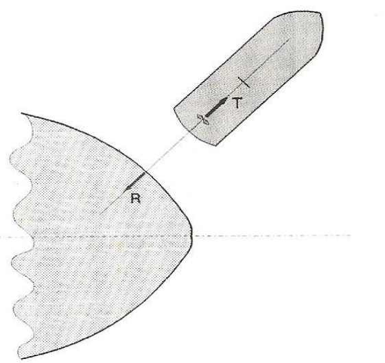
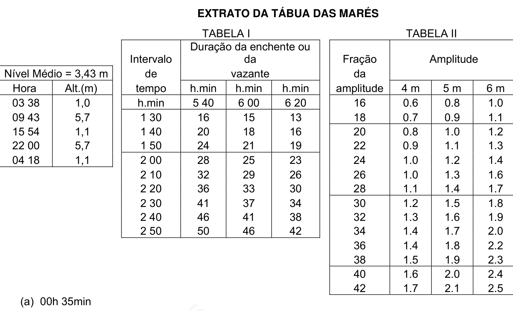
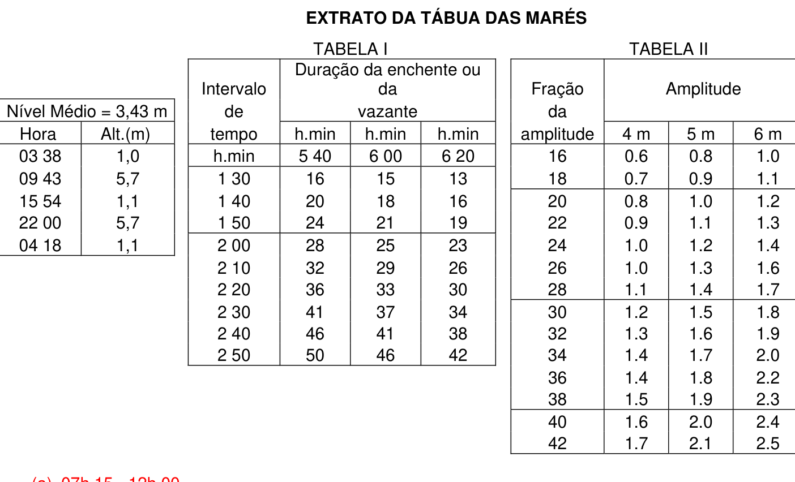

Os enunciados das quatro provas organizados para estudo: texto digitado, figuras necessárias recortadas das provas e equações em LaTeX. Navegue de questão em questão, selecione uma alternativa e confira o gabarito.
Associe os termos náuticos da coluna A aos da coluna B, com relação aos termos referentes aos cabos e sua manobra, de acordo com Maurílio M. Fonseca, no livro Arte Naval.
Associação entre termos e definições
Coluna A
Coluna B
1) Desgurnir
( ) Retirar cocas.
2) Desengastar
( ) Desfazer uma coca que tenha mordido no gorne de um poleame.
3) Engasgar
( ) Deixar que arriem os cabos ou a amarra para aliviá-los.
4) Enrascar
( ) Embaraçar cabos entre si, de modo a impedi-los de trabalhar regularmente.
5) Recorrer
( ) Passar um cabo por um gorne ou retorno, impedindo-o de correr.
( ) Tirar os cabos de laborar dos lugares onde estão trabalhando.
Gabarito: B(-) (2) (5) (4) (3) (1)
Q02
2006Comunicações e CIS
Bandeira retangular nas cores preto, amarelo, azul e encarnado em quatro triângulos, formados pelas diagonais, sendo preto o triângulo junto a tralha, amarelo, o superior, azul o da extremidade e encarnado o inferior, de acordo com o Código Internacional de Sinais (CIS), significa:
Gabarito: DEmbarcação solicitando rebocador.
Q03
2006Meteorologia e oceanografia
Na interpretação de uma carta sinótica de pressão ao nível do mar, o navegante identifica em uma região de ocorrência de cavado, no oceano Atlântico Sul, uma área com vento forte de SW, quando observa-se, de acordo com Lobo e Soares, no livro “Meteorologia e Oceanografia”, as seguintes características:
Gabarito: ANa circulação de ar frio, configuração isobárica com estreito espaçamento.
Q04
2006Navegação e cartas
O Prático Roberto Carlos estava navegando em um rio quando avistou uma sinalização náutica instalada na margem direita, com as seguintes características: cruz na cor preta em um painel quadrangular na cor laranja, com o braço horizontal visivelmente mais fino. De acordo com a publicação da DHN denominada Lista de Sinais Cegos, a referida sinalização náutica é um sinal de recomendação para:
Gabarito: Eindicar apreciável tráfego entre as margens.
Q05
2006Meteorologia e oceanografia
O Prático Sacramento, da asa do passadiço do navio mercante, observou o movimento turbulento da água nas proximidades do casco, em uma camada limite que aumenta em extensão, a partir da proa para a popa. Sacramento percebeu que existe algum tipo de troca de energia entre o casco e o meio fluido. Esta energia é suprida pelo sistema propulsivo do navio. Sacramento compreendeu que mantendo a rotação e velocidade do navio, em um canal varrido, podia verificar a presença de correntes longitudinais, conforme a camada limite se alargava ou se estreitava. Sacramento, então, passou a fazer uso constante dessa observação em suas manobras. A força de resistência observada por Sacramento é:
I) Residual.
II) Proporcional ao volume de carena.
III) Friccional.
IV) Equivalente a 50% da resistência total do navio, quando em baixas velocidades. Considerando as opções acima, assinale a alternativa correta:
Gabarito: DApenas a afirmativa III) é verdadeira.
Q06
2006Rebocadores e manobra
Coloque (F) falso ou (V) verdadeiro nas afirmativas abaixo, em relação a propulsores e sistemas de governo empregados em rebocadores, de acordo com o livro “Tug Use in Port”, recomendado pela Circular da IMO Msc 1101: ( ) Single screw tugs are usually best to some alongside for assistance of a submarine. ( ) An open fixed pitch propeller develops more thrust astern than an open controllable pitch propeller when fitted in a conventional tug going full astern. ( ) The nozzle type “backing nozzle”, has been developed to give better efficiency for a tug going astern, which results in a little less efficiency going ahead. ( ) Nozzles increase the efficiency of the propeller and increase the steering capabilities of a tug. ( ) The performance of a becker rudder when the tug has speed astern is better as that of an unflapped rudder.
Gabarito: D(V) (V) (V) (F) (F)
Q07
2006Navegação e cartas
O Prático Aroldo está a bordo de um rebocador convencional, parado em relação ao fundo, equipado com dois propulsores de passo fixo e dois lemes. Será necessário mover a embarcação, somente com movimento lateral para boreste, sem alterar o rumo. Sabendo-se que as forças ambientais são desprezíveis, qual dos comandos abaixo, pode mover a embarcação na deriva lateral desejada, de acordo com o livro “Tug Use in Port”, recomendado pela Circular da IMO Msc 1101?:
Gabarito: Amáquina do propulsor de BE para ré, máquina do propulsor de BB para vante, lemes para BB.
Q08
2006Rebocadores e manobra
Correlacione os tipos de rebocadores com suas características, segundo o guia “Tug Use in Port”, referência da circular MSC 1101 da IMO, e assinale a opção correta.
Tipos de rebocadores e características
Tipo de rebocador
Característica
I) Combi
( ) Tug with azimuth propellers forward which are built to operate over the tug’s bow.
II) Pusher tug
( ) Tug with azimuth propellers aft and towing point forward, built to operate mainly over the tug’s bow.
III) Multi tug
( ) Tug equipped with an additional towing point at the after end, and with $360^\circ$ steerable bow thruster.
IV) Tractor
( ) Tug with azimuth propeller aft which are built to operate over the tug’s bow as well as over tug’s stern.
V) Conventional
( ) Tug with their propulsion aft and towing point near midship.
( ) Tug with their towing point aft and propulsion forward of midship.
Gabarito: D(-), (II), (I), (III), (V) e (IV)
Q09
2006Rebocadores e manobra
Atualmente, a força de tração nos cabos de reboque tem levado à ruptura de cabeços e buzinas de navios. Este fato, segundo Otávio e Marcelo, no livro “Rebocadores Portuários”, do CONAPRA (Conselho Nacional de Praticagem) tem se tornado perigosamente freqüente, principalmente em operações de escolta. O aumento de freqüência desse tipo de acidente levou a OCIMF (Oil Companies International Marine Forum) a preparar um documento recomendando, entre outras normas de segurança, que exista uma troca de informações entre o Prático e o Comandante do navio. Esta recomendação está no Anexo 4 do livro supra citado. Coloque F (falso) ou V (verdadeiro) nas afirmativas abaixo, sobre o que é recomendável que o Prático avise ao Comandante do navio, de acordo com a OCIMF, assinalando a seguir, a opção correta: ( ) If escorting, the maximum towline forces that the tug may generate at escort speeds. ( ) The type of rugs to be used and their bollard pull(s). ( ) Which chocks, bollards and strong points can be used for towing. ( ) The method by which the ship’s crew should take on board and release the tug’s tow line. ( ) The SWL (Safe Working Load) of the mooring fittings. ( ) Maximum planned speed for the passage and the maximum speed of the tug. ( ) That on release, the tug’s gear should be lowered back always under control.
Gabarito: C(V) (V) (F) (V) (F) (V) (V)
Q10
2006Legislação e normas
O Prático Claudionor Lisboa chega a bordo, precisamente às 03:55h, de uma madrugada fria e chuvosa, no horário solicitado pelo armador. O Comandante e sua tripulação estavam prontos para o início da manobra de desatracação, programada para 04:20h. O oficial de quarto já tinha preparado o passadiço. O navio é o conteneiro “Aliança Europa”, n° IMO 9000742, bandeira brasileira, comprimento total de 200,5 metros, boca de 32,20 metros, pontal de 18,80 metros, arqueação bruta igual a 28.397, com motor SULZER de 22.106 BHP e capacidade de 2.303 TEU. Na desatracação a velocidade do vento variava entre 7 e 16 nós. O Comandante, após prévio estudo, solicitou dois rebocadores azimutais de 40.000Kgf de “bollard pull” (BP), que já estavam posicionados para a manobra. Após largar toda a amarração, o Prático ordenou aos mestres dos rebocadores que puxassem com meia-força o navio para fora do cais. Após alguns momentos, o Prático percebeu que o navio não se movimentava. Avaliando o calado do navio, horário e a tábua de maré e, conhecendo os dados obtidos da recente batimetria, o Prático concluiu que o navio estava encalhado. Após um estudo entre o Comandante e o Prático, ficou decidido que a manobra seria realizada às 07:00hs da manhã. A desatracação ocorreu com sucesso. A amplitude de maré era de 3,50m. Quando o navio já navegava no canal de acesso, o Prático dispensou os rebocadores. Em dado instante, foi solicitado 30° de leme a boreste e, por falha do leme, o navio não respondeu, ficando à deriva. Constatou-se que o problema de falha do leme, foi devido ao encalhe quando atracado. Após reparo, foi solicitada a revalidação do despacho. A Autoridade Marítima determinou abertura de IAFN. Diante deste fato, coloque F (falso) ou V (verdadeiro) nas afirmativas abaixo, assinalando a opção correta, de acordo com as Normas da Autoridade Marítima Brasileira e Lei de Segurança do Tráfego Aquaviário-LESTA. ( ) A demora do navio, após o acidente, foi inferior a 36 horas. ( ) Na preparação do passadiço, antes de executar o teste do aparelho de governo, o Oficial de Quarto deveria ter verificado o calado do navio, altura da maré e informado ao Comandante um possível encalhe do navio. ( ) Não é dever do Prático, quando em manobra, comunicar ao Capitão dos Portos encalhe de navio, estando atracado ou navegando na ZP. ( ) O encalhe é um acidente da navegação. ( ) Competia ao Comandante do navio comunicar os problemas ocorridos à Autoridade Marítima, de acordo com a alínea b), do item II, do art. 8° da LESTA.
Gabarito: D(F) (V) (F) (V) (V)
Q11
2006Legislação e normas
Após ler o acórdão do Tribunal Marítimo (TM), relativo a um acidente de navegação no qual fora arrolado como Prático da manobra, João Manoel, constatou que recebera multa de 40 UFIR. Porém, o TM converteu a multa em suspensão. De acordo com a Lei n° 2.180/54, que dispõe sobre o Tribunal Marítimo, quantos dias de suspensão o TM aplicou ao Prático João Manoel?
Gabarito: E30
Q12
2006Rebocadores e manobra
Independente de diferentes formas e tamanhos, o comportamento de qualquer navio sofre a influência de um grande número de fatores e interações. Entre eles, o efeito das águas rasas. A razão profundidade x calado fornece um parâmetro objetivo da intensidade de tal efeito em relação à manobra do navio. De acordo com Daniel H. Mac Elrevey, em sua obra “SHIPHANDLING FOR THE MARINER”, quais os valores limites expressam a razão acima mencionada, respectivamente, quando o efeito das águas rasas é sentido em sua plenitude e quando esse efeito se torna significativo?
Gabarito: B1,2 e 1,5
Q13
2006Rebocadores e manobra
When using an anchor as a shiphandling tool, which of the following statements contains false information, according to Daniel H. Mac Elrevey, in “Shiphandling for the Mariner”?
Gabarito: DWhen using a kedge anchor in an emergency, it is especially effective for stopping a ship in a short distance while maintaining her heading, and holding the ship laterally after headway is lost. It is an appropriate tool to work the ship around a bend.
Q14
2006Meteorologia e oceanografia
Um navegante observando o estado do mar e o estado do tempo, no oceano Atlântico Sul, em dia de céu limpo, sem vento e ondas, identifica em determinado azimute, surgirem no horizonte, em altos níveis, nuvens círrus de cristais de gelo, com acentuado deslocamento na direção do navio. Na interpretação dessa situação, o navegante pode concluir a seguinte previsão do tempo, de acordo com Lobo e Soares, no livro “Meteorologia e Oceanografia”:
Gabarito: EHá previsão de mau tempo com pancadas de chuvas, rajadas de vento e trovoadas.
Q15
2006Meteorologia e oceanografia
Na interpretação de uma imagem de satélite meteorológico, canal infravermelho, do oceano Atlântico Sul, as regiões com ocorrências de um cavado e o sistema frontal associado, serão identificadas pelas seguintes características da imagem, de acordo com Lobo e Soares, no livro “Meteorologia e Oceanografia”:
Gabarito: EA frente fria ocupa uma longa área bem estreita, na direção do equador, com indicação de um branco intenso.
Q16
2006Legislação e normas
No dia 20 de junho de 2006, a Prático Ana, em um navio VLCC, carregado, com 300.000 toneladas de porte bruto e calado de 22 metros, executou uma manobra completa desde o ponto de espera de Prático até o berço de atracação. Quando estava navegando, em um longo trecho seguro e em águas profundas, verificou que a velocidade de equilíbrio do navio para a rotação máxima era de 14 nós. As forças ambientais, nesse dia, eram desprezíveis. No dia 23 de junho, a mesma Prático Ana, foi escalada para fazer a manobra de desatracação do mesmo navio e conduzí-lo até o ponto definido nas Normas da Autoridade Marítima Brasileira para o desembarque do Prático. O navio estava na condição leve, com calado médio de 9,60 metros, estando o propulsor completamente imerso, com trim pela popa. Quando estava no mesmo trecho de águas seguras e profundas do dia 20, Ana verificou que a velocidade do navio para a mesma condição de rotação máxima era de 14.6 nós. As forças ambientais, nesse dia, eram desprezíveis. Ana perguntou: Por que o navio estando totalmente carregado desenvolveu praticamente a mesma velocidade da condição leve? Para chegar a uma resposta correta, Ana fez as seguintes considerações:
I) Na condição leve, estando o navio em águas parelhas, a razão de superfície molhada por unidade de deslocamento é aumentada e, com isto, a resistência friccional aumenta.
II) Para um navio VLCC, a razão de resistência total por unidade de deslocamento é diminuida para a condição leve.
III) O coeficiente de bloco para o navio leve é menor que para o navio carregado e, com isto, a resistência residual é maior.
IV) A força de empuxo do propulsor é menor quanto maior for o escoamento incidente sobre o mesmo. Em função das considerações de Ana, assinale a opção correta, de acordo com “Princípios de Arquitetura Naval”:
Gabarito: BApenas as afirmativas I) e IV) são verdadeiras.
Q17
2006Rebocadores e manobra
O Prático Manoel, em serviço, a bordo do navio graneleiro DOCEBAY, tipo “capesize”, observou que o diâmetro tático da curva de giro, fixada no passadiço, era de $3\,L_{pp}$. Manoel, em uma situação de emergência, necessitava fazer uma manobra em que o navio deveria executar uma curva de giro, mas sua velocidade não era a velocidade de cruzeiro correspondente à rotação máxima do navio. Manoel, então, verificou na tabela de rotação × velocidade do navio, instalada ao lado do telégrafo de máquinas, os seguintes dados:
Rotação × velocidade do navio
Condição do telégrafo
Rotação da máquina
Velocidade
FULL AHEAD
75 RPM
16 nós
HALF AHEAD
45 RPM
10 nós
SLOW AHEAD
30 RPM
6 nós
Com essas informações e estando o navio na velocidade de equilíbrio para a rotação comandada, com quais valores de diâmetro tático da curva de giro Manoel poderá manobrar o navio, quando nas condições de “HALF-AHEAD” e “SLOW-AHEAD”:
Gabarito: C3 $L_{pp}$, 3 $L_{pp}$
Q18
2006Rebocadores e manobra
Analise as afirmativas abaixo, com relação a rebocadores com cabo passado na proa de um navio, de acordo com Henk Hensen, no livro referência “Tug Use in Port”:
I) Um rebocador com o cabo passado na proa de um navio, independentemente do seu tipo, pode gerar uma força transversal ou lateral sobre o navio, para fins de controle de guinada.
II) Em rebocadores convencionais, estando o cabo passado na proa, deve-se manter o cabo teso, quando solicitado mover de um bordo do navio assistido para outro bordo.
III) Um rebocador trator é menos eficiente que um rebocador convencional, mesmo com grandes ângulos entre o cabo de reboque e a proa do navio assistido em movimento avante.
IV) Rebocadores tratores geralmente trabalham, quando com o cabo passado, com a proa voltada para a proa do navio assistido.
Assinale a opção correta:
Gabarito: BApenas as afirmativas I) e III) são verdadeiras.
Q19
2006Navegação e cartas
Coloque falso (F) ou verdadeiro (V) nas afirmativas abaixo, em relação aos modos de operação de rebocadores com cabo passado na popa do navio assistido, assinalando, a seguir, a opção correta, de acordo com Henk Hensen, no livro referência “Tug Use in Port”: ( ) Um rebocador trator operando em método de reboque indireto, com a finalidade de governar e retardar o movimento do navio, tem geralmente sua proa voltada para a popa do navio assistido. ( ) O método indireto de reboque é aconselhado quando a velocidade do navio é maior do que 5 ou 6 nós e o método direto é aconselhado para velocidades menores que 5 nós. ( ) Um rebocador trator reverso/ASD (Azimuth Stern Drive) quando desejando apenas retardar o movimento do navio, sem produzir guinada, opera na mesma posição, tanto no método direto quanto no método indireto. ( ) Em um rebocador trator reverso/ASD (Azimuth Stern Drive) a distância entre o ponto de aplicação da força de tração de reboque e o centro de pressões hidrodinâmicas é menor que a mesma distância medida num rebocador convencional. Consequentemente, mais potência será gasta para manter o rebocador trator ASD (Azimuth Stern Drive) em uma posição efetiva. Com isso a força de tração no cabo de reboque diminui. ( ) Em um rebocador trator reverso/ASD (Azimuth Stern Drive), quanto mais a vante estiver o seu centro de pressões hidrodinâmicas, melhor será o desempenho, principalmente, quando atuando como rebocador na popa do navio assistido.
Gabarito: B(F) (V) (V) (F) (V)
Q20
2006Meteorologia e oceanografia
Em 1964, Moody, verificou que as qualidades de governo de alguns navios eram tão baixas que chegavam a impedir a entrada dos mesmos em águas restritas. Moody sugeriu, então, uma solução prática para o problema: operar com um rebocador com cabo curto passado na popa do navio. Seus estudos e pesquisas, relatados em “Princípios de Arquitetura Naval”, descrevem que, estando o rebocador com o cabo passado na popa do navio:
I) A velocidade da corrente de descarga do propulsor do navio é aumentada.
II) A ação efetiva do leme do navio é aumentada.
III) A estabilidade direcional do navio é aumentada.
IV) As forças de interação entre o rebocador e o navio não afetam a ação propulsiva do navio.
Assinale a opção correta:
Gabarito: AApenas as afirmativas I), II) e III) são verdadeiras.
Q21
2006Geral
Assinale a afirmativa correta, com relação a poleame, aparelhos de laborar e acessórios, de acordo com Maurílo M. Fonseca, no livro Arte Naval:
Gabarito: BEm uma talha constituída por um cadernal de dois gornes e um moitão, quando o tirador sai do cadernal, que é a parte móvel, a multiplicação de potência é maior.
Q22
2006Meteorologia e oceanografia
Assinale a afirmativa correta, com relação a aparelho de fundear e suspender, de acordo com Maurílo M. Fonseca, no livro Arte Naval:
Gabarito: CUm ferro sem cepo precisa de maior filame de amarra para fundear, de modo que o esforço exercido pela amarra seja o mais próximo da horizontal.
Q23
2006Comunicações e CIS
O navio mercante “Ipanema”, arvorando bandeira brasileira, com arqueação bruta igual a 23.958, com 208m de comprimento total, carregando produto químico em seus tanques, estando atracado no porto do Rio de Janeiro, em Manguinhos, descarregava sua carga lentamente, como recomendado pelo fabricante. A tripulação de serviço acompanhava atenta a operação de descarregamento. Por volta das 09:30hs ocorreu um vazamento da carga, o que levou ao falecimento de um tripulante. Além das providências inerentes ao fato, o Comandante do navio determinou ao Oficial de Serviço, cumprir as Normas do Cerimonial, por ter ocorrido falecimento a bordo, até o corpo do tripulante ser retirado de bordo. Atendendo as Normas do Cerimonial, podemos concluir que o Oficial de Serviço teve o seguinte procedimento:
Gabarito: AManteve a bandeira de popa, conservada a meia-adriça, enquanto o corpo permaneceu a bordo.
Q24
2006Legislação e normas
O navio-tanque “Itajubá”, n° IMO 8900036, bandeira brasileira, comprimento total de 182,90 metros, boca de 32,08 metros, pontal de 17,20 metros, arqueação bruta igual a 26.639 e DWT igual a 44.555, demandava o porto de São Luiz – MA, carregando óleo diesel, com calado de 11,90 metros. Tendo em vista a prioridade na atracação, não teria fundeio. O Prático embarcou no ponto de espera de práticos, determinado nas Normas da Autoridade Marítima para o Serviço de Praticagem – NORMAM-12/DPC. Diante desse relato, podemos afirmar que:
Gabarito: AO Prático embarcou nas proximidades da bóia n° 22, pois o navio estava com calado superior a 11 (onze) metros.
Q25
2006Comunicações e CIS
What is the responsibility of vessels under GMDSS?
Gabarito: CEvery ship is able to perform those communications functions that are essential for the safety of the ship itself and of other ships.
Q26
2006Rebocadores e manobra
Nowadays mariners are getting used to count on modern aids for docking and undocking maneuvers, like bow thrusters, stern thrusters, controllable pitch propellers and so on. Nevertheless, there are still lots of ships not fitted with these devices. Furthermore, sometimes not even a single tug is available. When facing such a situation, an accomplished shiphandler will use the ship’s characteristics combined with the forces of nature, say wind and current, as an aid rather than a hindrance. Considering a single screw right hand turning propeller ship on a berthing maneuver, which of the following assertive contains incorrect information, according to Daniel H. Mac Elrevey?
Gabarito: AWhen berthing port side to, the ship is set up to allow a swing of the stern to port. Since the ship’s angle of approach decreases each time the engine goes astern, the initial angle of approach is smaller for a port side to docking.
Q27
2006Meteorologia e oceanografia
O Prático Joaquim estava preocupado. Na barra, onde iria embarcar para pegar um navio tipo “capesize”, na condição de carregamento em meia carga, já existia um estado de mar definido em função do vento local. Ele sabia que o abatimento do navio seria dado pela força devida as ondas do mar e pela força do vento. Para garantir a segurança da manobra, ele consultou um professor que, fundamentado em autores como Van Berlekom, citado em “Princípios de Arquitetura Naval”, afirmou:
I) A ordem de magnitude da força do vento sobre a estrutura do navio é da mesma ordem da força de resistência devido as ondas.
II) O efeito de deriva devido ao vento é de menor importância do que o efeito de deriva devido as ondas do mar.
III) O momento em “yaw”, devido a força do vento, é dependente da localização da superestrutura principal do navio.
IV) Estando o navio na condição meia carga, o vento verdadeiro tem um gradiente de velocidade, que próximo ao mar, faz com que sua velocidade seja reduzida na superfície livre e a ação da força do vento possa vir a ser desprezada.
Assinale a opção correta, de acordo com “Princípios de Arquitetura Naval”:
Gabarito: AApenas as afirmativas I), II) e III) são verdadeiras.
Q28
2006Meteorologia e oceanografia
O Prático Benedito Nascimento Lima observou, a bordo do navio petroleiro MAYSA, que o vento relativo estava entrando pela amura de boreste (30° em relação a proa) e que sua intensidade tinha aumentado de 10 para 25 nós. Ele recomendou ao Comandante que colocasse o navio afilado ao vento. Com essa atitude, e mantendo a rotação da máquina do navio, pode-se dizer, fundamentando-se em “Princípios de Arquitetura Naval”, que:
Gabarito: BA resistência ao avanço do navio diminui e é dependente da velocidade relativa do vento ao quadrado.
Q29
2006Meteorologia e oceanografia
O Comandante Raimundo, de um navio petroleiro, tipo “panamax”, com velocidade média acima de 8 nós, em águas parelhas e com coeficiente prismático de 0,86, fez a seguinte pergunta ao Prático Antonio, da Praticagem do Amapá: “- Posso lastrar os tanques de ré para derrabar meu navio, considerando que ele anda melhor derrabado?” Antonio estava com dúvidas para responder ao Comandante sobre a condição de trim ideal que o navio deveria ficar, para fins de obter menor resistência ao avanço, consumir menos combustível e reduzir o tempo da derrota. Antonio fez as seguintes considerações:
I) Geralmente, em navios mercantes, um trim adicional pela proa resulta, quando em baixas velocidades, em um aumento de resistência ao avanço, ocorrendo o oposto em velocidades normais ou de cruzeiro.
II) Em baixas velocidades, o aumento de calado à ré faz a proa “parecer maior”, diminuindo a resistência viscosa em função da separação da camada limite. Em velocidades altas, ou de cruzeiro, esta resistência é compensada pelo aumento da resistência de ondas irradiadas pelo navio.
III) Geralmente, navio com coeficiente prismático menor que 0,7, e que alcançam velocidades, cujo o número de Froude seja menor que 0,30, adquirem trim pela popa em baixas velocidades. Esse trim é invertido após o navio adquirir uma velocidade de cruzeiro ou normal.
IV) A redução de resistência, devido a mudança de trim, que é praticada nos navios de grande deslocamento, é muito pequena e, com isso, a economia de combustível será desprezível para o trecho a ser navegado. Analise as considerações de Antonio e assinale a opção correta, de acordo com “Princípios de Arquitetura Naval”:
Gabarito: CApenas as afirmativas III) e IV) são verdadeiras.
Q30
2006Meteorologia e oceanografia
O Prático João, da Praticagem do Amapá, a bordo de um navio tipo “panamax”, em baixa velocidade, verificando que estava em águas profundas, solicitou ao Comandante do navio: “meia força adiante”. A equipe de praça de máquinas do navio estava operando na condição de manobra e a rotação de máquina solicitada não era a mesma para a condição de viagem no mar. Passados 30 minutos, João verificou que ocorreu um aumento de rotação do propulsor, no entanto, a velocidade do navio praticamente não variou. João foi para a asa do passadiço e verificou que o perfil de ondas irradiadas pelo navio tinha variado em amplitude e as ondas sofriam efeitos de interferência entre elas. João entendeu o que estava ocorrendo e solicitou ao Comandante que aumentasse a rotação da máquina, porque naquela condição de velocidade, a resistência ao avanço do navio era muito afetada pelas ondas irradiadas. O sistema de ondas observado por João possui as seguintes características: Sistema iniciando com __________ na proa, __________ na popa, _________ nas proximidades do porão n° 1, __________ nas proximidades da superestrutura à ré.
Assinale a opção que completa corretamente as lacunas da sentença acima, de acordo com “Princípios de Arquitetura Naval”:
Gabarito: ACrista, crista, cavado, cavado.
Q31
2006Rebocadores e manobra
Pilot Richard is studying momentum theory of propeller action. He wants to better understand why she moves as function of propellers forces. Richard pointed out the following notes about propeller’s momentum theory:
I) The momentum theory is used to describe the action of an “ideal” propeller. The propeller it self is assumed to be a “disc”.
II) The propeller causes uniform increase in pressure as the fluid passes through the disc coupled with uniform increase in fluid velocity.
III) The exact nature of the propeller (pitch, number of blades, shaft rpm, etc) is not important.
IV) There is an unlimited inflow of water to the propeller and the flow is not frictionless. From theory of “Principles of Naval Architecture”, mark the correct alternative:
Gabarito: BI and III, solely are true.
Q32
2006Rebocadores e manobra
Qual das manobras padrão, abaixo relacionadas, indica a habilidade que o leme tem para governar o navio, de acordo com os “Princípios da Arquitetura Naval”:
Gabarito: BKempf “overshoot”.
Q33
2006Rebocadores e manobra
Pilot Lúcia, working in a ship, in shallow water, realized that she takes more horsepower to meet her required speed when compared with deep water condition. Lúcia looked at the free surface and listed the following notes in her notebook:
I) The flow of water around the bottom of the hull is restricted in shallow water, therefore the water flowing under the hull speeds up.
II) The faster moving water decreases the pressure under the hull, causing the ship to “squat”, increasing wetted surface area and increasing frictional resistance.
III) The waves produced in shallow water tend to be longer than do waves produced in deep water at the same speed.
IV) The energy required to produce ship’s waves in shallow water is the same to deep water at the same speed. Following “Principles of Naval Architecture” what is the correct alternative?
Gabarito: AI, II e III solely are true.
Q34
2006Meteorologia e oceanografia
Prático Sebastião, está na asa do passadiço, do navio tipo “capesize” DOCEBAY, navegando numa velocidade de 8 nós, em águas profundas. O navio está com máquinas na condição de meia força adiante. Sebastião observa as ondas irradiadas pelo navio e solicita máquina toda força adiante. Assim que o navio começa a aumentar a velocidade, pode-se dizer que as ondas geradas na proa:
Gabarito: AAumentam em comprimento e altura.
Q35
2006Legislação e normas
Entre os anos de 1971 e 1973, o professor Haruzo Eda, da Academia de Marinha Mercante de King’s Point, nos Estados Unidos, trabalhando para a Interoceanic Canal Study Project, realizou uma série de estudos experimentais e analíticos, para prever o grau de leme necessário para manter um navio tipo em linha reta em um canal de navegação. Esses estudos, foram feitos variando-se a largura e profundidade do canal, em função das dimensões do navio tipo. O padrão de medida de segurança, então adotado, serviu de guia para diversos estudos posteriores realizados pelo Corpo de Engenheiros do Exército Americano (USACE), pela Guarda Costeira Americana e pela PIANC (Permanent International Association of Navigation Congresses). No Brasil, desde 2005, de acordo com a NORMAM-08/DPC, o Capitão dos Portos pode fazer uso do guia “Approach Channels – A Guide to Design”, da PIANC, para definir padrões de segurança em portos de juridição nacional. Dada a importância da geometria do navio relativa a geometria do canal, qual foi o valor limite aceitável de ângulo de leme empregado pelo Professor Haruzo Eda, para fins de segurança e viabilidade de controle, através do Prático e Comandante, para se manter um navio em linha reta, quando se aproximando de uma margem em um canal de acesso, de acordo com o “Príncipios de Arquitetura Naval”?
Gabarito: B$15^\circ$
Q36
2006Geral
If a body submerged in an ideal (viscous fluid) as the fluid flows around it, there is a pressure distribution normal to the body. In the forward section of the hull there is a component of pressure resisting motion, and in the aft section of the body there is a component of pressure assisting motion. In an ideal fluid these pressure forces are equal and the body experiences no resistance. However, water is not an ideal fluid, and therefore some differences in the flow around the body exist. In the forward portion of the hull pressure forces act normal to the surface, however, in the aft portion of the hull the boundary layer reduces the forward component of pressure. This reduction in the forward acting component results in a net resistance force that is called:
Gabarito: EViscous pressure drag.
Q37
2006Meteorologia e oceanografia
O Praticante de Prático Pedro, na asa do passadiço de um navio em movimento, observa que o mesmo irradia ondas. É evidente que essas ondas possuem energia, e que essa energia foi gerada pelo navio. A força de resistência devido às ondas geradas pelo navio é depende, principalmente, da:
I) Aceleração da gravidade.
II) Profundidade local.
III) Viscosidade da água.
IV) Velocidade do navio. De acordo com “Princípios da Arquitetura Naval”, qual das opções abaixo relacionadas representa a alternativa correta?
Gabarito: AApenas as afirmativas I), II) e IV) são verdadeiras.
Q38
2006Meteorologia e oceanografia
Sr. Délio Maury, respeitado e experiente Prático, ao embarcar no navio tipo PANAMAX, na condição de carregamento pleno, recebeu do Comandante Anésio, as diretrizes do “Passage Planning”. Verificou, no plano de viagem, que as margens de segurança estavam traçadas fora de suas devidas posições. Délio informou ao Comandante, que a plotagem dessas margens estava errada. O Comandante Anésio, de imediato, avaliou as seguintes razões que levaram o Prático Délio a ter chegado a conclusão de que as margens de segurança estavam fora de suas devidas posições:
I) Batimetria desatualizada.
II) Efeito de ação de forças de ondas.
III) Efeito “SQUAT”.
IV) Falha em instrumentos de navegação do navio. Considerando as afirmativas de Anésio, é correto afirmar, de acordo com o livro “BRIDGE TEAM MANAGEMENT”, que:
Gabarito: AApenas I, II e III são verdadeiras.
Q39
2006Meteorologia e oceanografia
O navegante observa na circulação geral dos oceanos, o efeito da força de Coriolis, afetando as trajetórias das correntes oceâncias frias e quentes. No planejamento da derrota de um navio na costa nordeste e leste do Brasil, o navegante conclui, de acordo com Lobo e Soares, no livro “Meteorologia e Oceanografia”, que sua navegação costeira poderá sofrer os seguintes efeitos das correntes oceânicas:
Gabarito: CA navegação costeira é afetada pela corrente quente, que tem sua trajetória desviada para E, afastando o navio da costa.
Q40
2006Meteorologia e oceanografia
Na interpretação das curvas das marés de determinado porto, o navegante observa o comportamento dos elementos das marés, ao longo do ciclo lunar e pode identificar os períodos e alturas das marés mais favoráveis a sua navegação no referido porto. Dessa interpretação o navegante pode concluir, de acordo com Lobo e Soares, no livro “Meteorologia e Oceanografia”, o seguinte:
Gabarito: DA altura do nível médio do mar é constante nas marés de sizígia e de quadratura e pode ser igual a semi-amplitude de sizígia.
Q41
2006Navegação e cartas
You are approaching a light fitted with a RACON. The light may be identified on the radar by __________.
Gabarito: Da coded signal appearing on the same bearing at a greater range than the light
Q42
2006Navegação e cartas
O Prático João, estava em serviço, a bordo de um navio VLCC de 280.000 DWT, com as mesmas características do navio “ESSO OSAKA”. Em um dado momento da manobra, João necessitou prever a distância de parada, o respectivo afastamento (desvio) lateral, bem como os efeitos do leme em condições de folga abaixo da quilha (UKC Under Keel Clearence), correspondente a 20% do calado. João relembrando princípios da arquitetura naval, fez as seguintes considerações para o comportamento do navio em águas rasas:
I) Estando o navio com velocidade de cruzeiro e ordenando-se máquinas atrás toda força, a distância percorrida longitudinalmente até o momento da parada aumentará em relação a distância percorrida em águas profundas.
II) Estando o navio com velocidade de cruzeiro e ordenando-se máquinas atrás toda força, a deriva lateral diminuirá em relação a deriva lateral obtida em águas profundas.
III) Estando o navio com 3,8 nós e ordenando-se máquina com 45 rpm à ré, serão obtidas, praticamente, as mesmas distâncias longitudinais percorridas até o momento da parada, carregando-se o leme todo a boreste ou todo a bombordo.
IV) Estando o navio com 3,8 nós e ordenando-se máquina com 45 rpm à ré, o navio guinará para boreste independente de se carregar o leme todo a boreste ou todo a bombordo. Em função das considerações de João, assinale a opção correta de acordo com “Princípios de Arquitetura Naval”:
Gabarito: BApenas as afirmativas III) e IV) são verdadeiras.
Q43
2006Navegação e cartas
Assinale a opção que completa corretamente as lacunas da sentença abaixo: Assim que a velocidade do navio _______, a largura da camada limite _______, com isso, o ponto de transição entre o escoamento laminar e turbulento se move para uma posição mais para _______, em relação a proa do navio. Isto faz com que a resistência friccional ______ assim que a velocidade do navio ______.
When analyzing capabilities and limitations of tugs, pilot Carlos pointed out the following notes:
I) ASD (Azimuth Stern Drive) - Tugs, reverse-tractor and tractor tugs operating at a ship’s side have better performance when braking assistance than normal conventional tugs, because they have almost the same bollard pull astern as ahead.
II) A tug pulling at right angles to the bow of a ship, stopped in the water, will give the ship a lateral velocity and a rate of turn, causing the ship to pivot around a point somewhere near the bow.
III) Tractor tugs, with azimuth propellers, can achieve high pushing and pulling effectiveness when using a longer towline, because they can set their propellers thrusters, thus diverting the propellers washes. In this way they can avoid the propeller wash hit a ship’s hull.
IV) A tug keeping position at an angle with the ship’s hull may also exert rather high pushing forces caused by the waterflow, depending on the ship’s speed and the tug’s underwater hull form. From the list of Carlos is correct to affirm, according to the book “Tug Use in Ports”, that:
Gabarito: CI e IV solely are true.
Q45
2006Rebocadores e manobra
Pilot Robert was afraid about the resultant movement due to sinkage and to bow-up rotation of a container ship with Blockage Coefficient = 0,83, he knows that in this case the trim can be negative (that is, bow down) owing to low-speed operation in shallow water. Robert, following the “Principles of Naval Architecture”, was introduced to the results and theoretical studies of Professor Tuck. From his studies, Robert, achieved a value to describe the hydraulic force (squat´s force) acting on the ship proceeding in relatively narrow canal. What is the alternative that is not important in a Tuck’s squat calculation, used by Robert?
Gabarito: EDisplacement of the ship.
Q46
2006Geral
Pilot Joe Smith when executing a “Z” maneuver, in Chesapeake Bay, noted that it has the following numerical measures of control:
I) Time to reach the second execute yaw angle.
II) Overshoot yaw angle.
III) Overshoot width of path.
IV) Reach. Which of the alternatives above are numerical measures of countermaneuvering ability and are indicative of the amount of anticipation required of a helmsman while operating in restricted waters?
Gabarito: BII e III, solely are true.
Q47
2006Navegação e cartas
Depois de uma viagem de vários dias, vindo do Golfo Pérsico, o imponente VLCC estava poucas milhas do ponto de recebimento de Prático da Zona de Praticagem de São Sebastião – SP. Avaliando a situação, o Comandante Marco Aurélio decidiu que era chegada a hora de começar a quebrar o seguimento, a fim de chegar ao ponto de recebimento do Prático com velocidade de 3 a 4 nós. O radar estava “SAFO”, não havia situação de risco para anavegação, nem tampouco obstáculos à navegação. Apesar das manobras executadas pelo Comandante, o embarque do Prático ocorreu com 9 nós. Considerando as informações dadas, qual é o método preferível e, freqüentemente mais prático, para reduzir o seguimento do navio, dentro do canal, de acordo com Daniel H. Mac Elrevey, em sua obra “SHIPHANDLING FOR THE MARINER”.
Gabarito: CRealizar uma manobra de zig-zague em torno de um rumo base.
Q48
2006Legislação e normas
Coloque F (falso) ou V (verdadeiro) nas afirmativas abaixo, com base nas regras e instruções específicas para determinação da borda-livre e compartimentagem das embarcações nacionais empregadas na navegação de mar aberto, bem como nos critérios e procedimentos para estabilidade intacta, preconizadas nas Normas da Autoridade Marítima Brasileira, assinalando a seguir a opção correta. ( ) uma barcaça possui uma relação entre a boca e o calado superior a 6,0 e, uma relação entre a boca e o pontal superior a 3,0. ( ) a borda-livre mínima (valor mínimo) de embarcação “Não Solas” não poderá ser inferior a 100 mm, exceto em função da correção para a Posição da Linha de Convés. ( ) Na determinação do efeito de superfície livre, os tanques considerados no cálculo devem ser aqueles que possuam qualquer Momento de Superfície Livre a 30° de inclinação, quando com 70% de sua capacidade total. ( ) Embarcações de passageiros ou de carga, devem atender o seguinte critério de estabilidade: “A área sob a Curva de Estabilidade Estática compreendida entre os ângulos de inclinação de 0° a 30° não deverá ser inferior a $0.055\,\mathrm{m\cdot rad}$”. ( ) Embarcações de passageiros ou de carga, devem atender o seguinte critério de estabilidade: “A altura metacêntrica inicial não deve ser menor do que 0,15m”.
Gabarito: D(V) (V) (F) (V) (V)
Q49
2006Legislação e normas
According to International Regulations for Preventing Collisions at Sea, 1972 – COLREG, the use of the danger signal __________.
Gabarito: Cindicates doubt as to another vessels actions
Q50
2006Legislação e normas
What does the word "breadth" mean, according to International Regulations for Preventing Collisions at Sea, 1972 – COLREG?
Gabarito: CGreatest breadth
Q51
2006Legislação e normas
Analise o texto abaixo. O Prático Fritz Smith da Silva, estava no passadiço do navio-tanque “BLUE-RIVER”, juntamente com o Comandante Petkowitch, um autêntico croata. Fritz observou que, durante a manobra, o Comandante estava empregando frases que provavelmente não estavam de acordo com o vocabulário padrão recomendado internacionalmente. Fritz anotou em seu notebook as frases ditas pelo Comandante Petkowitich, para depois compará-las com o SMCP (Standard Marine Communication Phrases). De acordo com a resolução A-918(22), da Organização Marítima Mundial – IMO, que adotou o Standard Marine Communication Phrases, assinale com (E), as frases que devem ser evitadas e, com (C), as frases que devem ser usadas, de forma que a Comunicão Marítima atenda a máxima segurança, não gerando dúvidas com os interlocutores: ( ) I will not overtake the vessel North of you. ( ) Your position bearing 137 degrees from Big Head lighthouse distance 2.4 nautical miles. ( ) I might enter the fairway. ( ) You could be running into danger. ( ) Pilot boat is bearing 215 degrees from you. ( ) Dialog: Captain – “Blue River aft station. Stand by for making fast the tug on starboard quarter. Second Officer - “Blue River bridge. The tug is fast.” Captain – “Blue River aft station. Let go the tug.”
Gabarito: E(C), (C), (E), (E), (C) e (C)
Q52
2006Rebocadores e manobra
Pilot Gabriela needs to reduce as fast as possible the speed of a ship with 16 knots, in an emergency situation. The lateral sea room permits all available maneuvers. What is the better maneuver to be executed by Gabriela, as function of ship’s actual speed, according to “Principles of Naval Architecture”?
Gabarito: BHard-over turn.
Q53
2006Geral
According with reference book “Tug Use in Port”, what is a rotor tug?
Gabarito: DA tractor tug with azimuth thrusters, but the skeg is replaced by a third azimuth thruster arranged on the tug’s centerline.
Q54
2006Rebocadores e manobra
Captain Crenshaw, in his book ”Naval Shiphandling”, states that “Shiphandling is the art of handling the velocities of a ship”. So, a pilot uses forces of engines, propellers, rudders, the wind and the tide, lines, tugs and anchors to control the velocities of a ship. One of the most important sources of force on a ship is her own propeller and the pilot must understand the action of a propeller in order to be able to predict its action on ship. A propeller produces side forces in addition to thrust along the propeller shaft. A ship can rotates to starboard or port as function of these side forces. Pilot Antonio is studying propeller side force, on a single right-hand screw propeller, and knows that it can be broken down in four parts: following wake effect, inclination effect, helical discharge effect and shallow submergence effect. Antonio wrote the following consideration:
I) The following wake effect produces a net force tending to move the stern to right and cause the ship to veer to the port.
II) The inclination effect is net effect that tends to twist the ship to the right.
III) The shallow submergence effect tends the stern to starboard and cause the ship to veer to the left.
IV) The helical discharge effect tends to turn the ship to the right. From the list of Antonio is correct to affirm, according to the book “Naval Shiphandling”, that:
Gabarito: DIII solely is true.
Q55
2006Rebocadores e manobra
In the book “Tug Use in Port”, Capitain Henk Hensen, states that despite other risk situations, the critical situations a tug may be involved in can be simply divided as follows:
Gabarito: E- While passing a towline. - While the towline is secured.
Q56
2006Geral
According to the studies of Chase, stated in the book “Principles of Naval Architecture”, when clearing a ship slip, what is the adequate criterion for judging backing speed with respect a ship’s operators (Pilot included) opinion:
Gabarito: BAstern speed achieved after the ship has traveled one ship lenght.
Q57
2006Arquitetura naval
Assinale a afirmativa correta, com relação a nomenclatura do navio, de acordo com Maurílio M. Fonseca, no livro Arte Naval:
Gabarito: AHastilhas – chapas colocadas verticalmente no fundo do navio, em cada caverna, aumentando a altura das cavernas na parte que se estende da quilha ao bojo.
Q58
2006Navegação e cartas
O alcance geográfico dos faróis, em milhas náuticas, considera os olhos (desarmados) do navegante elevados sobre o nível do mar. Para qual elevação do olho do observador são determinados os alcances geográficos indicados nas publicações da DHN?
Gabarito: B5 metros
Q59
2006Meteorologia e oceanografia
Na interpretação de uma carta sinótica de pressão ao nível do mar, a configuração das isóbaras e a própria simbologia padrão das frentes, ressaltam a situação do sistema frontal e as posições relativas das frentes em relação ao centro de baixa pressão do cavado associado. Um navegante no oceano Atlântico Sul, identifica a ocorrência de uma frente estacionária, quando observa a seguinte situação, de acordo com Lobo e Soares, no livro “Meteorologia e Oceanografia”:
Gabarito: EOs ventos são paralelos a frente, em ambos os lados, porém de direções opostas.
Q60
2006Legislação e normas
The International Regulations for Preventing Collisions at Sea, 1972 – COLREG states that certain factors are to be taken into account when determining safe speed. One of the factors is the __________.
Gabarito: Dcurrent
Q61
2006Legislação e normas
Pilot Ferreira on board of the vessel tanker “MARIA” working at night, underway in Amazon River, looks at a target that seems to be another vessel underway. He can distinguish the sidelights and masthead light, as well as a high-intensity all-round flashing red light. Checking the COLREG/72, he concluded that:
Gabarito: DIt was a wing-in-ground craft underway taking off, landing or in flight near the surface.
Q62
2006Legislação e normas
In fog, you hear apparently forward of your beam a fog signal of 2 prolonged blasts in succession every two minutes. This signal indicates a __________, according to International Regulations for Preventing Collisions at Sea, 1972 – COLREG.
Gabarito: Dpower-driven vessel underway but stopped and making no way through the water
Q63
2006Legislação e normas
According to International Regulations for Preventing Collisions at Sea, 1972 – COLREG, vessel showing a yellow light over a white light at night is a vessel __________.
Gabarito: Btowing astern
Q64
2006Meteorologia e oceanografia
Durante a observação dos elementos meteorológicos, à superfície do mar e do continente, na ocorrência de brisa marítima, o navegante constata o seguinte, de acordo com Lobo e Soares, no livro “Meteorologia e Oceanografia”:
Gabarito: BNo mar, temperatura da água constante, circulação do ar divergente, movimento vertical do ar descendente e pressão do ar constante.
Q65
2006Meteorologia e oceanografia
Alguns Comandantes não gostam de fundear com dois ferros, embora isto seja útil quando se deseja limitar o giro do navio em um fundeadouro pequeno. A razão desse fato se deve, principalmente, aos problemas para evitar enrascar as amarras, em casos onde a intensidade e a direção da corrente e do vento são variáveis. Esse problema pode tornar impossível içar os ferros. Qual das alternativas abaixo, não constitui uma ação efetiva e confiável a ser tomada, quando o navio já estiver amarrado a dois ferros, em presença de vento e corrente, de acordo com Daniel H. Mac Elrevey, em sua obra “SHIPHANDLING FOR THE MARINER”?
Gabarito: CAlterar a proa do navio, carregando todo o leme e dando “palhetadas” com máquina a ré, caso necessário. Colocar a corrente ou o vento no bordo apropriado, de forma que auxilie o navio a girar, alternadamente, nos sentidos horário e anti-horário nas sucessivas marés ou mudanças de vento.
Q66
2006Comunicações e CIS
Which statement concerning reserve sources of energy for GMDSS is FALSE?
Gabarito: BBoth the VHF and MF/HF installations must be simultaneously supplied.
Q67
2006Legislação e normas
A vessel is considered to be "restricted in her ability to maneuver" under the Rules of International Regulations for Preventing Collisions at Sea, 1972 – COLREG if she is __________.
Gabarito: Bmineclearing
Q68
2006Legislação e normas
Eram, exatamente, 07:00h da manhã de um lindo dia de primavera, quando a lancha vermelha e branca do Prático estava se aproximando da escada de quebra-peito, adequadamente posicionada a boreste, um metro acima da linha d’água. No passadiço, o Prático lutava contra os raios de sol que vinham diretamente da proa, a fim de ler a “Folha de Informações para o Prático”, convenientemente colocada junto à vigia central. Não era um navio muito grande: 170 metros de comprimento total, 8,50 metros de calado, arqueação bruta de 16.720, hélice de passo controlável direito, um potente motor de 11.000 BHP, 23,40 metros de boca. Ele foi para a asa de bombordo e não pode evitar parar por um momento para admirar a bela vista do outro lado do canal. O sol diametralmente oposto, refletido pela superfície espelhada do prédio da prefeitura, combinado com o reflexo dessa amostra genuína de arquitetura moderna nas águas paradas, naquele momento, favorecido, também, pela falta de vento, compunha uma paisagem digna de ser imortalizada em uma obra prima de Dali. “- Bem, vamos voltar ao trabalho. É o único navio nessa dársena, atracado na posição mais próxima do canal, parece que será fácil tirá-lo daqui, esse giro será rápido - pensou consigo”. Depois que o único rebocador disponível já estava com o cabo passado na proa, operando na condição “push-pull”, e que as providências apropriadas em relação às espias já haviam sido tomadas, podemos concluir que a manobra mais simples a ser executada, a fim de alcançar o canal, de acordo com Daniel H. Mac Elrevey, em sua obra “SHIPHANDLING FOR THE MARINER”, será:
Gabarito: AMáquina atrás muito devagar, para abrir o navio do cais, usando o rebocador, quando necessário, para conter a tendência da proa para bombordo até o navio ficar paralelo ao cais. Para executar o giro, manter o navio com máquina atrás e puxar com o rebocador variando a intensidade da força do mesmo, de forma a manter uma razão de guinada segura.
Q69
2006Legislação e normas
According to International Regulations for Preventing Collisions at Sea, 1972 – COLREG, while underway in a fog you hear a signal of three strokes of a bell, a rapid ringing of the bell, and three more strokes of the bell. This signal is made by a vessel __________.
Gabarito: Baground
Q70
2006Comunicações e CIS
O navio “JOSEFINA”, na ZP-01, já com o prático a bordo, navegando nas proximidades do município de Mazagão, colidiu com um tronco de árvore submerso. Qual a mensagem a ser transmitida, de acordo com o Código Internacional de Sinais (CIS), quando questionado pela Autoridade Marítima, por meio da abreviatura HV?
Gabarito: DHW 4
Q01
2008Comunicações e CIS0,4 pontos
Tendo como referência o Código Internacional de Sinais, decodifique a seguinte mensagem recebida pelo VHF da atalaia: “Mayday Mayday Mayday. This is Merchant Ship CINGAPURA CINGAPURA CINGAPURA. Mayday Merchant Ship CINGAPURA Interco Alfa Terrathree Kartefour Pantafive Tambelan Romeo Bissotwo Unaone Charlie Bravo Soxisix” e assinale a opção correta:
Gabarito: Amerchant ship CINGAPURA in distress position 345 degrees Tambelan 21 miles. I require immediate assistance. I am on fire.
Q02
2008Geral0,5 pontos
Aboçar uma espia, o tirador de uma talha ou, de modo geral, qualquer cabo, é uma técnica, ou recurso, de uso muito comum a bordo, sendo empregado:
Gabarito: Cquando estando o cabo, ou espia, sob tensão, deseja-se mudar o ponto de amarração ou amarrá-lo em outra direção.
Q03
2008Meteorologia e oceanografia0,5 pontos
Em um mar com ondas de comprimento longo (Lw/L 1,5), em que situação é mais provável que ocorra dificuldade em manter o rumo, de acordo com o livro “Principles of Naval Arquitecture” (PNA)?
Gabarito: Emar de popa.
Q04
2008Rebocadores e manobra0,6 pontos
In certain circumstances a ship may be required to navigate in areas with a reduced UKC. It is important that the reduced UKC has been planned for and clearly shown. In cases where the UKC is less than 10% of the deepest draught, or other such percentage as was agreed at the appraisal stage, then it is essential that the OOW is aware of such reduced UKC. According to Swift & Bailey, in the book “Bridge Team Management”, he also needs to be aware that:
Gabarito: Espeed may have to be reduced in order to reduce squat with its consequent reduction in draught.
Q05
2008Meteorologia e oceanografia0,6 pontos
Um navio encontra-se navegando em um rio com forte correnteza, nas proximidades de uma acentuada curva à direita, no sentido de jusante para montante. Em situações deste tipo, a principal preocupação de quem está na manobra é saber o momento exato no qual se deve guinar o navio. Analise as afirmativas abaixo, que se referem à situação descrita acima.
I) ao fazer a curva a favor da corrente, se a guinada iniciar muito cedo, a corrente carrega o navio de encontro à margem direita do rio.
II) ao fazer a curva a favor da corrente, se a guinada iniciar muito cedo, a corrente carrega o navio paralelamente à margem esquerda do rio.
III) ao fazer a curva contra a corrente, se a guinada iniciar muito tarde, a corrente carrega o navio de encontro à margem direita do rio.
IV) ao fazer a curva contra a corrente, se a guinada iniciar muito tarde, a corrente carrega o navio de encontro à margem esquerda do rio. Baseando-se nas informações contidas no livro “Naval Shiphandling”, de R. S. Crenshaw Jr., assinale, abaixo, a opção correta:
Gabarito: Dapenas a afirmativa III) é verdadeira
Q06
2008Geral0,7 pontos
With the ship at rest and the right hand screw is started rapidly, only the ____________effect act and, as a result, a single propeller ship tends to move the stern to _______________. According to R. S. Crenshaw, Jr., in the book “Naval Shiphandling”, which answer best fill in the blanks?
Gabarito: Dshallow submergence – starboard
Q07
2008Rebocadores e manobra0,7 pontos
De acordo com o livro “Principles of Naval Arquitecture” (PNA), a maioria dos navios mercantes tem diâmetro de guinada (turning diameter) com leme totalmente carregado:
Gabarito: Bentre 2 e 4 comprimentos de navio.
Q08
2008Legislação e normas1,0 ponto
A prático Mariza conduz o NM ITAJUBÁ diretamente para o ponto de espera de prático, após deixar o canal de acesso ao porto. A condição na área é de visibilidade restrita. O NM navega no rumo verdadeiro de 035º, desenvolve velocidade segura e, cumprindo o RIPEAM, exibe suas luzes de posição e emprega o apito. O radar apresenta um único alvo nas proximidades, na bochecha de BB, na marcação verdadeira 355º, que não se consegue avistar. A plotagem radar indica que o alvo se aproxima sem que a marcação se altere em valor apreciável. O PMA calculado é de 500 jds, com a embarcação cruzando a proa do ITAJUBÁ. A vigilância informa ter escutado um apito longo, seguido de dois curtos. A prático Mariza, então, imediata e corretamente, sugere ao comandante:
Gabarito: Emanter o rumo e reduzir a velocidade.
Q09
2008Meteorologia e oceanografia1,0 ponto
Um navegante, no oceano Atlântico Sul, recebe a bordo o meteoromarinha de 0000 HMG, que contempla, na parte III, a área alfa, com a seguinte redação: “Céu parcialmente nublado a encoberto. Vento de NW/N, •, passando a de SW/S, 2/3, no sul da área. Ondas de S/NE, 1.0/2.0. Visibilidade boa à moderada”. Interprete as seguintes afirmativas:
I) uma frente fria já está se afastando da área.
II) rajadas de vento, trovoadas e pancadas de chuva, no norte da área, nas próximas 12 horas.
III) ocorrência de Cb, no sul da área.
IV) passagem do eixo de um cavado nas próximas 24 horas. De acordo com Lobo & Soares, no livro “Meteorologia e Oceanografia – Usuário Navegante”, assinale a opção abaixo que contém todas as afirmativas corretas apresentadas:
Gabarito: EIII) e IV)
Q10
2008Rebocadores e manobra1,0 ponto
The ship’s master is charged with the responsibility for the safe of the ship; pilots are engaged to assist with navigation in confined waters and to facilitate port approach, berthing and departure. The master has the ultimate responsibility and has the right and obligation to take over from the pilot in the rare event of the pilot’s inexperience or misjudgement. However in compulsory pilotage areas the pilot will expect to be responsible for the navigational conduct of the vessel. In practice, the master may find himself in a situation where he is not satisfied with the way the passage is being conducted by the pilot, yet is in no position to even query the pilot’s action as he, the master, has no idea as to what should be happening. The master may not be aware of the area, and the pilot may not be aware of the peculiarities of the ship. According to Swift & Bailey, in the book “Bridge Team Management”, these problems can be minimized by:
Gabarito: Destablishing a routine master/pilot information exchange.
Q11
2008Meteorologia e oceanografia1,0 ponto
Assinale a opção abaixo que completa corretamente as lacunas das sentenças seguintes, tendo como referência o livro “Arte Naval”, de Maurílio M. Fonseca: (I) A fibra que menos sofre a ação da umidade é a(o) ________________. (II) O cabo de ________________ é o mais forte dos cabos de fibra. (III) A fibra de ________________ é muito usada na confecção de linhas para adriças de bandeiras. (IV) A fibra de ________________ é usada nos serviços em que o cabo deva permanecer imerso na água e onde não se exija grande carga de ruptura. Apresenta a vantagem de não apodrecer com facilidade. (V) O cabo confeccionado com a fibra de ________________ possui grande resistência e flexibilidade quando molhado e sua cor é esbranquiçada como um cabo de algodão.
Luzes rítmicas brancas dispostas de maneira que pelo menos uma luz seja visível ao navegante que vier de qualquer direção ao se aproximar da estrutura. As luzes devem ser operadas em sincronismo com lampejos agrupados de modo a representar a letra “U” em código Morse, com período máximo de 30 segundos. A descrição acima corresponde a algumas das particularidades de uma sinalização noturna para:
Gabarito: Eplataformas de perfuração e explotação submarina.
Q13
2008Rebocadores e manobra1,0 ponto
Handling a dead ship to make a broadside narrow berthing, the pilot placed two tugs on the port side of the ship, one at the bow, other at the stern. The tugs secured themselves firmly to the ship with one of “tie-ups” described in the book “Naval Shiphandling”, by R. S. Crenshaw Jr. With this arrangement, the direction of the applied force can be altered over a wide range by simply shifting the tug’s rudder. According to the referred book, which tie-up should be applied by the tugs?
Gabarito: Cpower.
Q14
2008Questões anuladas1,0 pontoAnulada
Questão anulada pela banca.
Observação da banca: Questão anulada pela banca; não foi considerada no gabarito final.
Questão anuladaSem gabarito vigente na prova original.
Q15
2008Meteorologia e oceanografia1,0 ponto
Um prático, preocupado com os efeitos do vento em um navio, releu suas anotações, baseadas no livro “Principles of Naval Architecture” (PNA):
I) para um vento de través, tanto o casco como a superestrutura têm a mesma resistência específica; dessa forma, a área efetiva é aproximadamente igual à área projetada longitudinal.
II) quando um navio está navegando sob efeito do vento, a maior resistência ao avanço ocorre quando o vento é de proa.
III) quando um navio se move contra o vento, o vento resultante apresenta o mesmo gradiente que o vento natural.
IV) if there is a strong wind on the beam, the ship will make leeway, which leads to an important increase in hydrodynamic resistance. Das anotações listadas acima, indique, a seguir, quais as que estão corretas:
Gabarito: DI), III) and IV)
Q16
2008Rebocadores e manobra1,0 ponto
The use of tugs towing on a line is used most often when conventional tugs are assisting vessels. The advantage of this method is that it can be used in ________ waters. The forward tugs, sometimes, has two towlines so called __________ lines. According to Capt. Henk Hensen, in the book “Tug Use in Port”, which answer best fill in the blanks?
Gabarito: Dnarrow - cross
Q17
2008Meteorologia e oceanografia1,0 ponto
Um prático embarcou em um contratorpedeiro da classe “Knox”, para executar uma manobra de desatracação. O navio estava atracado por boreste, sem obstruções na proa e na popa, em um cais construído na direção Leste – Oeste. A repetidora da agulha giroscópica do passadiço marcava 090º. A amarração estava singela, com todas as espias passadas. Não havia vento no local e a direção da corrente de maré era Oeste, com velocidade de 3 nós. Ao tomar conhecimento de que esta classe de navio só dispõe de um eixo, hélice com passo direito e um leme, o prático avaliou que, embora tivesse que se preocupar com o domo do sonar do navio, a manobra não seria difícil. Dispensou, então, o auxílio de rebocadores e começou a manobra. Assinale, de acordo com o livro “Naval Shiphandling”, de R. S. Crenshaw Jr., a manobra correta a ser realizada pelo prático para desatracar o contratorpedeiro com segurança:
Gabarito: Ecarregar o leme para bombordo, agüentar a espia 5, solecar a espia 1 e largar as demais espias; quando abrir a proa, colocar o leme a meio, solecar a 5, agüentar a 1 temporariamente e colocar máquina adiante 1/3; largar as espias e, com o leme a meio, colocar máquina adiante.
Q18
2008Questões anuladas1,0 pontoAnulada
Questão anulada pela banca.
Observação da banca: Questão anulada pela banca; não foi considerada no gabarito final.
Questão anuladaSem gabarito vigente na prova original.
Q19
2008Legislação e normas1,0 ponto
De acordo com o prescrito pelo COLREG e pelas Normas da Autoridade Marítima para Embarcações Empregadas na Navegação Interior (NORMAM-02/DPC), associe a coluna A com a coluna B e aponte a resposta correta.
Sinais sonoros e luminosos
Coluna A
Coluna B
1) warning signal
( ) one prolonged blast in normal visibility
2) manoeuvring signal
( ) two short blasts
3) signal to attract attention
( ) the beam of searchlight
4) sound signal in restricted visibility
( ) three blasts in succession, namely one prolonged followed by two short blasts
5) distress signal
( ) a continuous sounding with any fog-signalling apparatus
( ) four prolonged blasts
Gabarito: C(1) (2) (3) (4) (5) (3)
Q20
2008Questões anuladas1,0 pontoAnulada
Questão anulada pela banca.
Observação da banca: Questão anulada pela banca; não foi considerada no gabarito final.
Questão anuladaSem gabarito vigente na prova original.
Q21
2008Rebocadores e manobra1,0 ponto
De acordo com Fragoso & Cajaty, no livro “Rebocadores Portuários”, analise as afirmações abaixo:
I) o reboque com cabo na proa do navio é a forma tradicional quando se quer rebocar um navio sem propulsão; porém, com o navio em movimento, a tentativa de governo usando esse rebocador apresenta resultados limitados.
II) um rebocador, com cabo passado na proa do navio, não é capaz de atuar quando se quer quebrar o segmento avante do navio.
III) um rebocador, com cabo de reboque na popa de um navio, é a melhor forma de atuar quando se deseja manobrar um navio com segmento e com problema de governo.
IV) é possível um rebocador não convencional trabalhar na popa do navio em movimento e aplicar força superior ao seu próprio “bollard pull”. Quais das afirmativas acima estão corretas?
Gabarito: ATodas
Q22
2008Navegação e cartas1,0 ponto
De acordo com Swift & Bailey, no livro “Bridge Team Management”, coloque (F) falso ou (V) verdadeiro nas afirmativas abaixo, assinalando, a seguir, a opção correta: ( ) the extreme height of the ship above the keel, known as the air draught, will be required if there are low overhead clearances. ( ) when making a landfall, by determining the bearing and range of a “dipping light” the OOW can obtain an approximate position, often long before radar can have detected such light. ( ) when the actual time of transit of a given area is known the Tidal Heights and Streams can be calculated and due allowance made for these streams in order to calculate the course to steer to achieve a planned track. ( ) termed the “point of return”, it will be the position where the ship enters water so narrow that there is no room to turn or where it is not possible to retrace the track due to a falling tide and insufficient UKC. ( ) coastal and estuarial tracks will also be constrained by the decisions made at the appraisal stage and should be first drawn on the large-scale charts of the area to be traversed.
Gabarito: C(F) (V) (V) (F) (F)
Q23
2008Legislação e normas1,0 ponto
Um navio de passageiros, classificado para a navegação em mar aberto, com arqueação bruta igual a 10.000, transportando turistas, navegando no rio Amazonas, sofre uma colisão. A seguir, verificou-se que os compartimentos abaixo da linha d’água estão alagando rapidamente. O prático sugere ao comandante que o navio seja desviado para a margem e encalhado. Não houve a ocorrência de vítimas fatais ou de feridos. De acordo com o previsto nas Normas da Autoridade Marítima para Inquéritos Administrativos sobre Acidentes e Fatos da Navegação (NORMAM-09/DPC), tal seqüência de eventos é classificada como:
Gabarito: Eacidente da navegação, caracterizado por colisão, água aberta e varação.
Q24
2008Rebocadores e manobra1,0 ponto
De acordo com o livro “Principles of Naval Arquitecture” (PNA), coloque V (verdadeiro) ou F (falso) nas afirmativas abaixo, assinalando, a seguir, a opção correta: ( ) normalmente, considera-se a distância de parada de um navio (stopping head reach) àquela obtida para velocidades de porto. ( ) with sufficient see room, turning of a large ship is much superior to stopping for avoiding a hazard. ( ) astern thrust predominates when stopping a large tanker on a straight path from moderate speed. ( ) o tempo necessário para inverter a rotação do hélice é mais importante para navios maiores.
Gabarito: D(V) (F) (V) (F)
Q25
2008Geral1,0 ponto
When a tug is slowly overtaking a bulk carrier and approach the stern from behind, it experience a(n) ________________ of speed due to the ________________. When coming nearly abeam of the stern the tug is ________________ the ship, caused by ________________. Since the tug’s forepart is closer to the ship than the stern, the tug experiences a ________________ turning moment. As soon as the tug moves further forward and parallel with the ship’s hull, it experience a sudden ________________ turning moment caused by ________________. According to Capt. Henk Hensen, in the book “Tug Use in Port”, which answer best fill in the blanks?
Gabarito: Eincrease – relative low water speed – sucked toward – low pressure field due to the speed of water between tug and ship’s hull – toward – outward – the tug’s bow cushion
Q26
2008Meteorologia e oceanografia1,0 ponto
As marés têm significativas influências na navegação costeira, inclusive na elaboração das cartas náuticas. Por conseqüência, os navegantes devem levar em consideração os seus efeitos. Para tal, utilizam as publicações Tábuas das Marés e Cartas de Correntes de Marés, que fornecem os principais elementos e efeitos das marés. Interprete as afirmativas a seguir:
I) as Cartas de Correntes de Marés se referem às marés do próprio dia, por isso podendo ser usadas diariamente na navegação.
II) ao longo do ciclo lunar, as variações diárias das alturas das marés são simétricas, em relação ao nível médio do mar (NM), tanto na quadratura quanto na sizígia.
III) a informação da altura do NM, indicada em destaque no cabeçalho das páginas de cada porto, nas Tábuas das Marés, é para alertar o navegante sobre o valor da amplitude da maré de sizígia no respectivo porto.
IV) as intensidades distintas das correntes de enchente e de vazante, observadas em diferentes portos, devem-se a características geográficas da região.
V) o estabelecimento do nível de referência do zero da régua das marés está associado à carta náutica do porto. De acordo com Lobo & Soares, no livro “Meteorologia e Oceanografia – Usuário Navegante”, assinale a opção abaixo que contém todas as afirmativas verdadeiras apresentadas:
Gabarito: EII), III) e V)
Q27
2008Arquitetura naval1,0 ponto
Tendo como referência o livro “Arte Naval”, de Maurílio M. Fonseca, assinale a opção abaixo que designa corretamente as voltas que se enquadram nas descrições ou finalidades apresentadas a seguir: (I) é dada, por exemplo, no chicote do tirador de uma talha, a fim de não deixar desgurnir; para este fim, é superior à meia-volta, pois não fica mordido, sendo desfeito mais facilmente; muito usado como nó ornamental por sua beleza e simplicidade de desenho. (II) é uma volta singela em que uma das partes do cabo morde a outra; é raramente usada, só servindo para rematar outras voltas. (III) é a volta mais usada a bordo para se passar um fiel, ou uma adriça, em torno de um balaústre, um olhal ou um pé-de-carneiro. (IV) usada para falcaçar, ou para prender um cabo a um gato, tal como a boca-de-lobo; empregada para a amarração das pranchas de costado. (V) é constituída por uma série de voltas alternadas, dadas entre dois objetos quaisquer e é usada para diversos fins, entre os quais para dar volta a uma espia, ou a um cabo de laborar qualquer, em torno de dois cabeços ou em cunhos de malaguetas.
Taking into account that the vessels described below carry all the lights prescribed by the rules of COLREG, which of the following alternatives is the correct answer?
Gabarito: Aan 11 metres in lenght power-driven vessel underway may exhibit: two masterhead lights, sidelights and sternlight.
Q29
2008Legislação e normas1,0 ponto
O prático João Bento embarca no NM IPANEMA, para realizar navegação de praticagem noturna na lagoa dos Patos, até Porto Alegre, em revezamento com o comandante do NM, que está devidamente habilitado como prático da ZP 20 pelo Diretor de Portos e Costas. João Bento é informado que o NM, devido a uma pane elétrica, está com todas as luzes de mastro inoperantes e o reparo somente é possível em Porto Alegre. João Bento avalia então que existe risco inaceitável à navegação e comunica o fato à Capitania dos Portos do Rio Grande do Sul. O capitão dos portos, depois de considerar os inúmeros fatores envolvidos no problema e as Normas da Autoridade Marítima pertinentes, decide pela realização da navegação. João Bento, inconformado com a decisão do capitão dos portos, solicita à atalaia a sua substituição, que é efetivada pelo prático de sobreaviso. Considerando o contido nas Normas da Autoridade Marítima para o Serviço de Praticagem (NORMAM-12/DPC), assinale a afirmativa correta relacionada com o fato descrito:
Gabarito: BJoão Bento está sujeito a responder a inquérito administrativo, por ter se recusado a prestar o serviço de praticagem.
Q30
2008Comunicações e CIS1,0 ponto
Para desempenhar com eficácia o seu serviço, o prático, além de conhecer bem as condições locais no que se refere ao porto, canais, balizamentos, regime de ventos, correntes etc., necessita estar familiarizado com as peculiaridades dos navios que vai manobrar, como também com as características dos equipamentos com os quais irá lidar no dia-a-dia. MacElrevey & MacElrevey, no livro “Shiphandler for the Mariner”, citam algumas características de equipamentos, cujo conhecimento trará vantagens para o prático. Coloque falso (F) ou verdadeiro (V) nas afirmativas abaixo, assinalando, a seguir, a opção correta, de acordo com as informações apresentadas na obra mencionada: ( ) o hélice de passo variável atuando com máquinas atrás é mais eficaz do que o hélice convencional atuando da mesma forma. ( ) um navio movido a turbina a vapor aumenta as rotações do eixo mais vagarosamente do que um navio movido a diesel. ( ) uma chamada-fonia em um equipamento VHF pode ser ouvida no mar, mesmo nas piores condições, em uma área de, pelo menos, 1800 milhas náuticas quadradas. ( ) a precisão da apresentação do “laptop” de um “Laptop-based Navigation System” é limitada pela precisão das cartas que o sistema utiliza. ( ) os sistemas AZIPOD são mais seguros e silenciosos do que os sistemas convencionais, fatores que os tornam particularmente atrativos para qualquer tipo de navio.
Gabarito: C(F) (V) (F) (V) (F)
Q31
2008Arquitetura naval1,0 ponto
A Very Large Crude Carrier – VLCC (length: 336 meters; beam: 56 meters; draft: 20 meters; block coefficient: 0.75) headed for home port, was transiting in confined waters. VLCC’s speed was 8 knots, depth soundings in the area indicated 30 meters and weather conditions were fair. According to MacElrevey & MacElrevey, in the book “Shiphandler for the Mariner”, calculate the total squat that was degrading the VLCC’s maneuvering capabilities:
Gabarito: D0.96 meter.
Q32
2008Navegação e cartas1,0 ponto
Uma embarcação naufraga próximo à margem do canal de acesso ao porto, passando a constituir um novo perigo à navegação naquela área.
Assinale a opção correta no que diz respeito à sinalização deste novo perigo:
Gabarito: Epelo menos um dos sinais usados para balizá-lo deverá ser duplicado; o sinal usado para duplicação deve ser idêntico ao seu par em todos os aspectos.
Q33
2008Legislação e normas1,0 ponto
Um navio mercante de bandeira brasileira estava sofrendo reparos no dique seco de um estaleiro em Itajaí, Santa Catarina. Um soldador do estaleiro, a bordo do navio, enquanto aplicava um cordão de solda entre duas chapas no costado, sofre um acidente fatal. No caso em questão, observando-se o previsto na Lei nº 2.180, de 5 de fevereiro de 1954, que dispõe sobre o Tribunal Marítimo, a Capitania dos Portos da jurisdição:
I) deve instaurar Inquérito Administrativo sobre Acidentes e Fatos da Navegação, em virtude de a vítima ser considerada pessoal da Marinha Mercante.
II) não deve instaurar Inquérito Administrativo sobre Acidentes e Fatos da Navegação, porque o navio estava no estaleiro, em reparos.
III) deve instaurar Inquérito Administrativo sobre Acidentes e Fatos da Navegação, porque o Tribunal Marítimo exerce jurisdição sobre os empreiteiros ou proprietários de estaleiros, carreiras, diques ou oficinas de reparação naval.
IV) deve instaurar Inquérito Administrativo sobre Acidentes e Fatos da Navegação, porque o acidente ocorreu a bordo de um navio de bandeira brasileira.
V) não deve tomar providência alguma, porque o evento não se enquadra como acidente ou fato da navegação. Com relação às afirmativas acima, assinale a opção correta, dentre as indicadas abaixo:
Gabarito: CI), III) e IV) são afirmativas verdadeiras
Q34
2008Rebocadores e manobra1,0 ponto
For interaction between hull and propeller, we use the thrust deduction factor as a mean of deduct the thrust available at the propeller. According to the book “Principles of Naval Arquitecture” (PNA), the main reason for this deduction is that:
Gabarito: Cthe pressure over some stern areas is reduced by the action of the propeller in accelerating the water flowing into it.
Q35
2008Legislação e normas1,0 ponto
Um NM russo realizando sua viagem inaugural estará atracado no porto de Santos no período de 6 a 8 de setembro. Ainda no mar, o agente informa ao NM sobre as comemorações do Dia da Independência do Brasil e sobre as visitas oficiais que o embaixador russo no nosso País e o capitão dos portos farão ao navio em 7 de setembro. Lendo as Normas da Autoridade Marítima para o Cerimonial da Marinha Mercante Nacional (NORMAM-22/DPC), o agente indica os seguintes procedimentos relativos ao cerimonial que devem ser observados pelo NM:
I) içar a bandeira brasileira no tope do mastro de vante e a bandeira russa no mastro da popa quando entrando no porto.
II) durante o período atracado, manter içada a bandeira brasileira no tope do mastro de vante e a bandeira russa no mastro da popa, no período compreendido entre as 08:00 horas e o pôr-do-sol.
III) no dia 7 de setembro, embandeirar em arco no período compreendido entre as 08:00 horas e o pôr-do-sol.
IV) por ocasião das visitas oficiais, o comandante do NM deve receber e despedir as autoridades no patim superior da escada de portaló, tendo seus oficiais formados nas proximidades.
V) as bandeiras brasileiras precisam estar em bom estado de conservação. Quais os procedimentos indicados pelo agente estão EQUIVOCADOS ou INCOMPLETOS?
Gabarito: CIII) e IV)
Q36
2008Geral1,0 ponto
No que se refere a aparelhos de laborar, a talha singela é um dos tipos mais aplicados a bordo para serviços gerais do convés. Pode ser descrita como:
Gabarito: Dconstituída por um cadernal de dois gornes e um moitão; o cadernal, de onde sai o tirador, pode ser a parte fixa ou a parte móvel do aparelho.
Q37
2008Rebocadores e manobra1,0 ponto
O navio-tanque KATREVARO aproxima-se do porto de São Sebastião, onde atracará para descarregar óleo cru. O navio entra em contato com a atalaia do porto e os seguintes diálogos se realizam: ( ) Dialog: São Sebastião Pilot Station: “Please use IMO Standard Marine Communications Phrases.” KATREVARO: “I will use IMO Standard Marine Communications Phrases.” ( ) Dialog: São Sebastião Pilot Station: “What is your position?” KATREVARO: “My position is two-three degrees five-seven minutes zero-four five degrees two-nine decimal six.” ( ) Dialog: KATREVARO: “When will the pilot embark?” São Sebastião Pilot Station: “Stand by one-five minutes.” Após o embarque do prático, com o NT fundeado, este e o comandante travam os seguintes diálogos: ( ) Dialog: Pilot: “Are you ready to get underway?” Captain: “We are ready to get underway.” ( ) Dialog: Pilot: “What is the diameter of the turning circle?” Captain: “The diameter of the turning circle is three-zero-zero-zero metres.” ( ) Dialog: Pilot: “What is the speed at half ahead?” Captain: “The speed at half ahead is eight knots.” De acordo com o preconizado pelo “IMO Standard Marine Communication Phrases” (SMCP), indique com C os diálogos recomendados e com E os que não obedecem rigorosamente ao SMCP, desprezando as chamadas-fonia, e, a seguir, assinale a opção correta abaixo:
Gabarito: A(C) (E) (C) (E) (C) (C)
Q38
2008Legislação e normas1,0 ponto
Considerando as Normas da Autoridade Marítima para Embarcações Empregadas na Navegação Interior (NORMAM-02/DPC), coloque falso (F) ou verdadeiro (V) nas afirmativas abaixo e assinale a opção correta: ( ) em situação de roda a roda, com visibilidade restrita, uma embarcação de propulsão mecânica navegando contra a corrente em rios ou canais tem preferência de passagem. ( ) luzes circulares amarelas avistadas em águas interiores brasileiras somente podem identificar: embarcação de propulsão mecânica rebocando, unidade integrada em movimento ou presença de tubulação de dragagem. ( ) toda embarcação deve adotar velocidade apropriada a não causar avarias, pela ação de maretas, quando for cruzar com embarcações pequenas, embarcações empurrando ou rebocando ou quando se aproximar de qualquer embarcação amarrada a um trapiche, cais e similares. ( ) uma embarcação de propulsão mecânica em movimento, com 90 metros de comprimento, restrita devido ao seu calado, pode exibir, entre o pôr e o nascer do sol, duas luzes de mastro, luzes de bordo, luz de alcançado e três luzes circulares encarnadas dispostas em linha vertical. ( ) uma unidade integrada em movimento deve exibir, entre o pôr e o nascer do sol, duas luzes de mastro, luzes de bordo e luz de alcançado; durante o período diurno, deve exibir três marcas dispostas em linha vertical, sendo a superior e a inferior esferas e a do meio uma marca em forma de dois cones com as bases unidas.
Gabarito: E(F) (F) (V) (V) (F)
Q39
2008Meteorologia e oceanografia1,0 ponto
De acordo com o livro “Navegação: A Ciência e a Arte”, de A. P. Miguens, com referência aos controles operacionais do radar, quando se deseja melhorar a imagem do radar pela supressão dos ecos produzidos pelo retorno do mar nas proximidades do navio, o operador faz os ajustes necessários por meio:
Gabarito: Ado controle STC.
Q40
2008Rebocadores e manobra1,0 ponto
According to Swift & Bailey, in the book “Bridge Team Management”, the plan of the passage having been made, discussed and approved, execution of the plan now has to be determined. By this is meant the methods used to carry out the plan, including the best use of available resources. Final details will need to be confirmed when the actual timing of the passage can be established. It must always be borne in mind that safe execution of the passage may only be achieved by:
Gabarito: Bmodification of the plan in the case of navigational equipment becoming unreliable or inaccurate or time changes having to be made e.g. delayed departure.
Q41
2008Legislação e normas1,0 ponto
No tocante ao controle do tráfego marítimo, de acordo com o previsto nas Normas da Autoridade Marítima para Tráfego e Permanência de Embarcações em Águas Jurisdicionais Brasileiras (NORMAM-08/DPC), um navio de carga, do tipo porta contêiner, de bandeira estrangeira, classificado para a navegação de longo curso, operando no mar territorial brasileiro, deverá adotar os seguintes procedimentos:
Gabarito: Ecompulsoriamente aderir ao SISTRAM; dispensado de enviar mensagem pelo SIMMAP; compulsoriamente recolher o valor da TUF de acordo com o valor da sua tonelagem de porte bruto.
Q42
2008Navegação e cartas1,0 ponto
Um navio está navegando em um canal restrito em profundidade e largura. Sabe-se que a profundidade e a largura do canal são uniformes. Seu rumo é paralelo ao eixo central do canal, mas o navio está navegando a bombordo desse eixo. Quais serão as tendências do navio, de acordo com o livro “Principles of Naval Arquitecture” (PNA)?
Gabarito: Bcentro de gravidade com tendência para BB e proa com tendência para BE.
Q43
2008Geral1,0 ponto
In a single propeller ship going ahead, with a right-hand screw, as a blade moves downward it meets water which is moving upward as well as aft. This is equivalent to _________________ the relative velocity and the angle of attack at same time and thus, _________________ in thrust is experienced. On the opposite side, a ______________ in thrust is experienced. The net effect of the reaction to the inclined flow, then, is a _________________ tending to _____________the ship to the _____________. According to R. S. Crenshaw, Jr., in the book “Naval Shiphandling”, which answer best fill in the blanks?
Conforme previsto no capítulo 7 das Normas da Autoridade Marítima para Embarcações Empregadas na Navegação de Mar Aberto (NORMAM-01/DPC), a altura mínima de proa de uma embarcação de carga “NÃO SOLAS”, que possui boca moldada de 6 metros, pontal moldado de 2,5 metros e comprimento total de 32 metros, deve ser de:
Gabarito: C1 726 mm.
Q45
2008Questões anuladas1,0 pontoAnulada
Questão anulada pela banca.
Observação da banca: Questão anulada pela banca; não foi considerada no gabarito final.
Questão anuladaSem gabarito vigente na prova original.
Q46
2008Navegação e cartas1,0 ponto
Before starting to practice in order to improve his ability to estimate his ship’s speed with accuracy, an inexperienced shiphandler studied the methods available by which the mariner can judge speed. During the study, he made a list with the following notes:
I) Doppler speed indicator showing lateral motion as well as ahead and stern speed is a valuable shiphandling tool, especially when moving larger ships where speed is critical and tolerance for error small.
II) fixes by radar or visual bearings are convenient and sufficiently accurate for determining speed in a docking situation.
III) even at night is better to estimate ship’s speed looking at objects abeam or little abaft than looking objects ahead of the ships.
IV) if the ship’s quickwater falls behind the ship when the engine is put astern, the vessel’s speed is 3 knots or more. According to MacElrevey & MacElrevey, in the book “Shiphandler for the Mariner”, what is the correct alternative?
Gabarito: BI), III) and IV) solely are true
Q47
2008Geral1,0 ponto
Considerando a estrutura adotada no Brasil para o Serviço de Busca e Salvamento Marítimo (SAR), de acordo com o livro “Arte Naval”, de Maurílio M. Fonseca, relacione a coluna A com a coluna B e aponte a resposta correta:
COLUNA A
COLUNA B (1) ComOpNav ( ) MRCC regional (2) RENEC ( ) Sistema de Alerta (3) Capitania dos Portos ( ) MRCC principal (4) Distrito Naval ( ) RSC ( ) SALVAMAR SUL
Gabarito: B(4) (2) (1) (3) (4)
Q48
2008Meteorologia e oceanografia1,0 ponto
Um navegante em navegação costeira, com céu limpo e estrelado, sem vento e com mar tranqüilo, atento à chegada de mau tempo, deve manter permanente busca por indícios de uma mudança das condições meteorológicas. Deve observar o estado do mar e do tempo, o céu e o vento, além das tendências indicadas pelos registros das leituras dos instrumentos de bordo. Interprete, a seguir, os indícios selecionados para evidenciar a chegada de mau tempo:
I) em determinado azimute do horizonte, ocorrência de trovões e movimento de nuvens cirrus.
II) vento força 3 de SW, passando a de N/NW, com formação rápida de nuvens stratus.
III) ocorrência de clarão de relâmpagos além do horizonte e vento força • de N/NW, com ausência de pancadas de chuva.
IV) formação de nuvens paradas tipo cirrus de cristais de gelo.
V) trovoadas distantes e vento força 2 de NW, passando a 4, com ausência de rajadas de vento. De acordo com Lobo & Soares, no livro “Meteorologia e Oceanografia – Usuário Navegante”, assinale a opção abaixo que contém todas as afirmativas verdadeiras apresentadas:
Gabarito: AI), III) e V)
Q49
2008Rebocadores e manobra1,0 ponto
According to Capt. Henk Hensen, in the book “Tug Use in Port”, which sentence is WRONG when considering the disadvantages in use short towline when towing on a line?
Gabarito: Dwhen a tug is made fast as forward tug and is operating broadside while ship is moving astern, a short towline has a negative effect on tug safety.
Q50
2008Navegação e cartas1,0 ponto
Nas anotações de um prático, tiradas do livro “Principles of Naval Arquitecture” (PNA), estava escrito:
I) quanto maior a relação área do canal / área da seção mestra, maior será a velocidade crítica para manobrabilidade.
II) navios com proa cheia e popa afilada são mais favoráveis a ter melhores qualidades de manobra em canais.
III) uma maneira prática de melhorar as qualidades de manobra de um navio em um canal é amarrar, com cabo de reboque, um rebocador na popa do navio.
IV) qualquer navio operando na linha de centro de um canal está numa posição de equilíbrio instável. Quais das afirmativas acima estão corretas?
Gabarito: ATodas
Q51
2008Questões anuladas1,0 pontoAnulada
Questão anulada pela banca.
Observação da banca: Questão anulada pela banca; não foi considerada no gabarito final.
Questão anuladaSem gabarito vigente na prova original.
Q52
2008Geral1,0 ponto
Consulting R. S. Crenshaw, Jr., in the book “Naval Shiphandling”, in order to remember some techniques about mooring a destroyer to a buoy, a pilot made a list with the following procedures:
I) stop the engines at 200 yards from the buoy, pass the buoy line and messenger to the boat, and send the boat out ahead with the buoy line.
II) use a buoy hook for securing buoy line, as necessary.
III) never allow the ship to get between the buoy and the boat.
IV) use the engines and helm to twist the bow downwind and slightly short of the buoy, when making a buoy crosswind or crosscurrent. From that list, is correct to affirm according to the referred book that:
Gabarito: DI) solely is correct
Q53
2008Navegação e cartas1,0 ponto
Assinale a opção correta em relação às luzes e suas características de um sinal náutico luminoso:
Gabarito: Bocultação é o intervalo de obscuridade relativamente mais curto que o de luz em um mesmo período.
Q54
2008Geral1,0 ponto
Assinale a opção abaixo que completa corretamente as lacunas das seguintes sentenças: A âncora é ligada ________________ à amarra, que é uma cadeia de elos especiais ________________. ________________ é a aresta saliente localizada na base inferior ________________ nas âncoras tipo ________________.
Gabarito: Apor manilha – com malhetes – palma – dos braços – patente
Q55
2008Navegação e cartas1,0 ponto
Leia o texto abaixo e assinale a opção INCORRETA em relação à navegação por meio de satélite: According to Swift & Bailey, in the book “Bridge Team Management”, the provision of navigational satellites, giving ships the opportunity to determine their position at any time, is one of the greatest achievements of modern technology. However, like all navigational systems, incidents have occurred when they were least expected. GPS does not lessen the requirement for careful and diligent navigation.
Gabarito: Dan excellent way of confirming the GPS is to check one another with two or more independent satellite receivers.
Q56
2008Comunicações e CIS1,0 ponto
Uma embarcação de carga de bandeira estrangeira, devidamente abastecida de combustível, água e gêneros alimentícios, com arqueação bruta igual a 350, navegando em águas jurisdicionais brasileiras a 100 milhas náuticas da costa, recebe sinal de socorro por intermédio do equipamento de chamada seletiva digital (DSC) do VHF do equipamento GMDSS. O comandante da embarcação verifica que o sinal de socorro é proveniente de outra embarcação que se encontra a aproximadamente 10 milhas náuticas de distância e que, para interceptá-la, seria necessário alteração de rota. O comandante da embarcação decide não atender ao pedido de socorro porque, analisando a situação, julgou que tal ação iria caracterizar alteração de rota e, ainda, que a sua embarcação, devido ao valor da arqueação bruta, não é obrigada a ser dotada do GMDSS. Examinando-se o caso sob a ótica da Lei nº 2.180, de 5 de fevereiro de 1954, que dispõe sobre o Tribunal Marítimo, e das Normas da Autoridade Marítima para Inquéritos Administrativos sobre Acidentes e Fatos da Navegação (NORMAM-09/DPC), assinale a afirmativa correta dentre as opções abaixo:
Gabarito: Co comandante da embarcação agiu de forma incorreta, porque a ação não caracterizaria alteração de rota.
Q57
2008Legislação e normas1,0 ponto
O prático Gomes assessora o comandante na condução de um NM de 250 m pelo canal de acesso a um porto, exibindo no mastro, em adriças distintas, a marca constituída por um cilindro preto, a bandeira HOTEL e a bandeira DELTA. Uma lancha de cerca de 10 m de comprimento navega em rumo aproximadamente perpendicular ao do NM, indicando visualmente que vai cruzar a sua proa de BE para BB, em situação facilmente avaliada como de risco de abalroamento. O experiente Gomes, em cumprimento ao COLREG, sugere corretamente ao comandante:
Gabarito: Dque faça soar seis apitos curtos e rápidos e reduza a velocidade.
Q58
2008Geral1,0 ponto
The investigation into the grounding of a Russian conteiner ship, the “Kapitan Serykh”, included the following conclusions: 1. The grounding was the result of the “Kapitan Serykh” not attaining sufficient propeller thurst/speed to execute the turn on to the leads in the wind conditions at the time. 2. The exchange of information between the master and the pilot did not conform to the requirements of the International Convention on Standards of Training, Certification and Watch Keeping for Seafares. 3. For reasons unknown, the master did not provide the manoeuvring full ahead pitch, as indicated on the Pilot Card and repeatedly requested by the pilot. 4. Had the Pilot been informed of the manoeuvring problems during the vessel’s arrival at the port he would have been forewarned of a possible problem during departure. The conclusions prove the importance of pilot-master information exchange. In order to provide the master with any information that is relevant to the vessel passage, this exchange should include:
I) providing estimated call out time for the crew, need for an anchor watch, any special engine maneuvers.
II) discussing recent changes in the International Regulations for Preventing Collisions at Sea.
III) fixing the current position and reviewing the general route from that point to the berth or anchorage.
IV) discussing any accidents recently occurred in the harbour. According to MacElrevey & MacElrevey, in the book “Shiphandler for the Mariner”, is correct to affirm that:
Gabarito: BI) and III) solely are true
Q59
2008Navegação e cartas1,0 ponto
De acordo com o livro “Navegação: A Ciência e a Arte”, de A. P. Miguens, ao se preparar para uma passagem por águas restritas, onde irá empregar a navegação paralela indexada, o navegador, usando um compasso, compara fisicamente a distância entre os anéis de distância da repetidora do radar em cada escala a ser utilizada. Por meio desse procedimento, o navegador busca, naquela repetidora:
Gabarito: Bverificar a condição de linearidade.
Q60
2008Legislação e normas1,0 ponto
Analise as afirmativas abaixo: (I) em costas rochosas, a linha de igual profundidade de 20 (vinte) metros constitui outra chamada de atenção, especialmente para navios de maior calado. (II) ao navegar ao longo da costa, o navegante deve ter em mente que a velocidade reduzida em cerração é considerada pelos tribunais como sendo “a velocidade que permite a um navio, depois de avistar outro que venha sobre ele, guinar com segurança, segundo as regras do RIPEAM, para evitar um abalroamento”. (III) os balizamentos de utilização restrita, estabelecidos, mantidos e operados por particulares, quando localizados em áreas hidrografadas, não têm suas alterações divulgadas em “Aviso aos Navegantes”. (IV) exceto em cartas de portos que tenham sido levantados com detalhes, a linha de igual profundidade de 10 (dez) metros deve ser considerada como linha de precaução ou perigo, devido à possibilidade de existência de irregularidade no fundo não conhecida. De acordo com o Roteiro e com as Normas da Autoridade Marítima para a Sinalização Náutica (NORMAM-17/DPC), assinale, a seguir, a opção correta:
Gabarito: Cas afirmativas I), III) e IV) são verdadeiras
Q61
2008Arquitetura naval1,0 ponto
The spiral maneuver, as described in the book “Principles of Naval Arquitecture” (PNA), serves mainly to determine:
Gabarito: Cstability characteristics.
Q62
2008Legislação e normas1,0 ponto
De acordo com a LESTA, com a RLESTA e com a NORMAM-12/DPC:
Gabarito: Ao prático é um aquaviário do 5º grupo, profissional que presta serviços de praticagem embarcado. O serviço de praticagem é constituído do prático, estação de praticagem e lancha de prático.
Q63
2008Meteorologia e oceanografia1,0 ponto
Assinale a opção abaixo que completa corretamente as lacunas das seguintes sentenças: A publicação Tábuas das Marés dispõe de tabelas que possibilitam a determinação da altura da maré em um dado instante. Essas tabelas permitem interpolações de uma curva de maré de caráter ________________. A maré que mais se aproxima dessa condição teórica é a ________________. Assim, recomenda-se que o uso dessas tabelas se limite aos portos de ________________ para o ________________, tendo em vista que, para o ________________, a maré se apresenta com ________________ ou mista, o que impossibilita bons resultados.
Gabarito: Csinusoidal – semidiurna – Vitória – norte – sul – desigualdades diurnas
Q64
2008Rebocadores e manobra1,0 ponto
De acordo com Henk Hensen, no livro “Tug Use in Port”, e Fragoso & Cajaty, no livro “Rebocadores Portuários”, os lemes colocados por ante avante do propulsor e carregados para vante para melhorar a manobrabilidade, quando com máquinas para ré, são conhecidos como:
Gabarito: Bflanking rudders.
Q65
2008Geral1,0 ponto
De acordo com o livro “Arte Naval”, de Maurílio M. Fonseca, correlacione a nomenclatura da coluna A às respectivas definições ou finalidades na coluna B e, a seguir, assinale a opção correta.
Nomenclatura de Arte Naval
Coluna A
Coluna B
I. golas
( ) peças horizontais que se colocam no bico da proa, ou na popa, contornando-as por dentro, de BE a BB; servem para dar maior resistência a essas partes do navio
II. reclamos
( ) golas metálicas colocadas no convés ou numa coberta, onde se apóia o pé de um mastro
III. sicordas
( ) vasos de madeira, em forma de tina ou de cilindro, com aberturas para permitir a ventilação e fixados no convés para acondicionar um cabo de manobra
IV. carlingas
( ) cantoneiras, barras, ferros em meia-cana ou peças fundidas que contornam uma abertura qualquer para reforço local
V. latas
( ) vaus que não são contínuos de BB a BE, colocados na altura de uma enora, ou de uma escotilha, entre os vaus propriamente ditos
( ) peças de metal, em forma de cruz, fixadas ao convés, para dar volta aos cabos, como nos cunhos
( ) peças colocadas de proa a popa, num convés ou numa coberta, ligando os vaus entre si
( ) recessos feitos no costado de alguns navios, junto ao escovém, para alojar a cruz e os braços das âncoras tipo patente
( ) peças de ferro, ou outro metal, de forma curva, e abertas na parte de cima, fixadas nos mastros ou em partes altas, servindo de guia aos cabos do aparelho
( ) sua função principal é constituir um revestimento externo, impermeável à água, mas é, também, uma parte importante da estrutura, contribuindo para a resistência do casco aos esforços longitudinais
Gabarito: E(IV) (I) (V) (III) (II)
Q66
2008Meteorologia e oceanografia1,0 ponto
A publicação “Avisos aos Navegantes” é um folheto quinzenal, elaborado pelo Centro de Hidrografia da Marinha, por delegação da Diretoria de Hidrografia e Navegação, com o propósito principal de fornecer, aos navegantes e usuários em geral, informações destinadas à atualização das cartas e publicações náuticas brasileiras. Adicionalmente, são apresentados alguns dos Avisos-Rádio Náuticos em vigor, bem como outras informações gerais importantes aos navegantes.
Assinale a opção correta no que diz respeito aos “Avisos aos Navegantes”:
Gabarito: Bum aviso numerado E 4027/08 indica tratar-se de um aviso-rádio náutico costeiro da costa Leste, do ano de 2008.
Q67
2008Geral1,0 ponto
According to Swift & Bailey, in the book “Bridge Team Management”, visual observation of characteristics of lights and timing of them, observation of the environment using all available means, constant and continuous all round visual look out enabling a full understanding of the situation and the proximity of dangers, other ships and navigation marks, among others, are procedures to maintain and enhance the OOW’s:
Gabarito: Asituational awareness.
Q68
2008Meteorologia e oceanografia1,0 ponto
Observando as condições meteorológicas reinantes na área, o navegante constata a ocorrência de vento fraco, quente e seco. A temperatura da água do mar está fria, inferior à da temperatura do ar. O tempo está calmo e sem turbulências. Em função dessas condições, o navegante deve esperar ter o alcance do radar de seu navio alterado, em virtude da:
Gabarito: Esuper-refração.
Q69
2008Meteorologia e oceanografia1,0 ponto
Um navegante, no mar costeiro do oceano Atlântico Sul, preparando-se para demandar um canal de acesso ao porto, tem interesse em identificar a possibilidade de ocorrência de névoa úmida de advecção, na área em que está navegando. Interprete as observações de parâmetros meteorológicos, apresentadas abaixo, selecionadas para evidenciar a possibilidade de ocorrência de visibilidade no mar moderada/restrita, devido à névoa úmida de advecção:
I) vento força 8, temperatura da superfície do mar (TSM) = 22º C, temperatura do ar $T=23^\circ\,\mathrm{C}$ e umidade relativa UR = 95%.
II) $T=28^\circ\,\mathrm{C}$, temperatura do ponto de orvalho $TPO=21^\circ\,\mathrm{C}$, $TSM=16^\circ\,\mathrm{C}$ e vento força 3.
III) UR = 96%, $T=29^\circ\,\mathrm{C}$, vento força 5 e $TSM=30^\circ\,\mathrm{C}$.
IV) $TSM=18^\circ\,\mathrm{C}$, $TPO=24^\circ\,\mathrm{C}$, vento força • e UR = 95%.
V) $TPO=23^\circ\,\mathrm{C}$, $TSM=19^\circ\,\mathrm{C}$, vento força 2 e $T=29^\circ\,\mathrm{C}$. De acordo com Lobo & Soares, no livro “Meteorologia e Oceanografia – Usuário Navegante”, assinale a opção abaixo que contém todas as afirmativas verdadeiras:
Gabarito: AII) e V)
Q70
2008Meteorologia e oceanografia1,0 ponto
Um prático encontra-se na manobra de um navio que vai entrar em um porto para se amarrar a duas bóias, denominadas A e B. Devido às condições locais, o navio não poderá efetuar um giro completo até pegar a primeira bóia. As bóias estão na mesma direção da entrada do porto. A bóia B está localizada mais próxima do interior do porto, enquanto que a bóia A encontra-se mais perto da entrada da barra. O vento no local é desprezível, mas a corrente de maré, dependendo de sua velocidade e direção, influenciará decisivamente na manobra. Considerando os dados da situação descrita, coloque falso (F) ou verdadeiro (V) nas afirmativas abaixo, que se referem à primeira manobra que deve ser realizada pelo prático, assinalando, a seguir, a opção correta, de acordo com as informações apresentadas por R. S. Crenshaw Jr. no livro “Naval Shiphandling”: ( ) com a maré vazando, amarrar a popa na bóia B. ( ) com a maré enchendo, amarrar a popa na bóia A. ( ) com a maré enchendo, amarrar a proa na bóia B. ( ) com a maré no estofo, amarrar a proa na bóia B. ( ) com a maré no estofo, amarrar a proa na bóia A.
Gabarito: B(F) (V) (F) (V) (F)
Q71
2008Arquitetura naval1,0 ponto
According to the book “Principles of Naval Arquitecture” (PNA), the cavitations forms on marine propellers are mainly:
Gabarito: BFixed and Vortex types.
Q72
2008Geral1,0 ponto
Coloque V (verdadeiro) ou F (falso) nas afirmativas abaixo, que tratam de regras práticas na utilização de aparelhos de laborar, assinalando, a seguir, a opção correta: ( ) aplicar, sempre que possível, o cadernal onde gurne o tirador no peso que se deseja alar. ( ) para diminuir o esforço sobre o cadernal fixo, fazer, se possível, a arreigada fixa fora do mesmo cadernal. ( ) içando um peso, o tirador suporta a tensão mínima e a arreigada fixa a tensão máxima; arriando, será o contrário. ( ) o melhor modo de engatar uma talha em um cabo que não tenha alça é pela volta de encapeladura singela. ( ) o que se ganha em força, perde-se em tempo, pois tem-se um comprimento maior que alar no tirador.
Gabarito: D(V) (V) (F) (F) (V)
Q73
2008Rebocadores e manobra1,0 ponto
De acordo com Fragoso & Cajaty, no livro “Rebocadores Portuários”, o que é arrasto transverso?
Gabarito: Aé quando um rebocador azimutal, com cabo passado na popa de um navio com seguimento avante, direciona um propulsor para cada bordo.
Q01
2011Rebocadores e manobra1,2 pontos
De acordo com o contido no livro “Principles of Naval Architecture” (SNAME - 3a edição: 1988/1989), analise as afirmativas abaixo, identifique quais são verdadeiras e assinale a opção correta:
I) A manobra “Dieudonne Spiral” identifica as características de estabilidade direcional de um navio.
II) A manobra de “Pull out” provê indicações das qualidades de um navio em realizar uma curva de giro.
III) A manobra “Kempf Overshoot” provê indicações da habilidade de um leme em controlar um navio.
IV) A manobra “Turning” identifica as características de estabilidade direcional de um navio.
V) A manobra “Bech Reverse Spiral” identifica, principalmente, as características de estabilidade direcional de um navio.
Gabarito: DApenas as afirmativas I), III) e V) são verdadeiras.
Q02
2011Navegação e cartas0,5 pontos
De acordo com o contido no livro “Arte Naval” (Maurílio M. Fonseca - 7a edição: 2005), para que um navio tenha equilíbrio estável é necessário que?
Gabarito: BO centro de gravidade ( CG ) esteja abaixo do metacentro ( M ).
Q03
2011Rebocadores e manobra1,0 ponto
De acordo com o contido no livro “Bridge Team Management - A Practical Guide” (Captain A J Swift FNI e do Captain T J Bailey FNI - 2a edição: 2004), avistar o alinhamento (em Inglês, “transit” ou “range”) de dois objetos conspícuos pode dar ao oficial de quarto no passadiço uma rápida indicação do posicionamento do navio em relação à derrota planejada. Uma grande vantagem do uso de alinhamentos é não depender do emprego de qualquer instrumento, senão do olho humano. Contudo, embora distâncias maiores possam ser utilizadas, para se obter máxima precisão, considera-se que a relação entre a distância do observador ao objeto mais próximo e a distância que separa os dois objetos que compõem o alinhamento não deve ser maior que:
Gabarito: DTrês vezes.
Q04
2011Legislação e normas1,2 pontos
De acordo com as Regras Especiais para Evitar Abalroamento na Navegação Interior constantes da NORMAM-02/DPC, analise as afirmativas abaixo, identifique quais são verdadeiras e assinale a opção correta:
I) As tubulações de dragagem que estiverem flutuando ou apoiadas em cavaletes deverão exibir, durante a noite e em períodos de visibilidade reduzida, uma fileira de luzes circulares brancas e, adicionalmente, mais duas luzes circulares vermelhas nos extremos das tubulações.
II) O termo “mareta” caracteriza um grupo de embarcações que navegam de forma integrada, mas não de forma rígida.
III) Em uma situação de roda a roda, uma embarcação de propulsão mecânica navegando contra a corrente terá preferência de passagem sobre uma embarcação navegando a favor da corrente.
IV) Uma barcaça atracada, que não seja em sentido paralelo à costa ou margem, deverá exibir, durante a noite e em períodos de visibilidade reduzida, duas luzes brancas sem obstrução, obrigatoriamente instaladas nas extremidades mais afastadas da costa ou margem.
Gabarito: EApenas a afirmativa IV é verdadeira.
Q05
2011Meteorologia e oceanografia1,2 pontos
Em relação às cartas sinóticas de pressão ao nível do mar, da METAREA V, analise as afirmativas abaixo, identifique quais são verdadeiras e assinale a opção correta:
I) A ocorrência de carneiros e borrifos só pode ser observada em áreas com condições propícias a ondas desenvolvidas.
II) Isóbaras estreitas e curvas indicam ventos fortes na região.
III) Em áreas geradoras de ondas, observam-se isóbaras pouco largas e vento com persistência na mesma direção.
IV) Configuração com isóbaras longas e retilíneas indicam ocorrência de ventos muito fortes mantendo a mesma direção.
V) As direções das ondas não acompanham a circulação do vento.
Gabarito: AApenas as afirmativas II), III) e V) são verdadeiras.
Q06
2011Comunicações e CIS1,0 ponto
Assinale a resposta correta. Devido ao péssimo estado do mar, o Prático Carlos Araújo foi obrigado a seguir viagem em um NM que desatracou de Santos (SP). O NM é um navio SOLAS, MMSI 710325000, com dotação completa de equipamentos do GMDSS para a área marítima A3 e SES INMARSAT B e C. O plano de viagem do NM previa Salvador (BA) como porto de destino. Ficou acordado com o Comandante do NM que, se as condições meteorológicas e o estado do mar permitissem, Carlos Araújo desembarcaria para uma lancha de prático nas proximidades do Rio de Janeiro. Durante a travessia, considerando a capacidade plena de comunicações do NM, Carlos Araújo teve a possibilidade de:
Gabarito: CComunicar-se com um Prático amigo no Rio de Janeiro por meio de correio eletrônico, acertando detalhes do possível transbordo.
Q07
2011Meteorologia e oceanografia1,2 pontos
De acordo com o contido no livro “Naval Shiphandling” (Crenshaw, Russel Sydnor - 4a edição: 1975), analise as afirmativas abaixo, identifique quais são verdadeiras e assinale a opção correta:
I) Em geral, o efeito na resistência ao avanço provocada por um vento de proa com velocidade de trinta nós é equivalente ao efeito provocado por uma corrente de proa de 1 (um) nó.
II) O ângulo real de ataque do leme é igual ao ângulo do leme em relação ao navio, para qualquer ângulo de inclinação do navio em relação a sua verdadeira direção de movimento.
III) O propulsor é mais eficiente quando o navio é impelido para vante e menos eficiente quando o navio é impelido para ré. Apesar disso, o empuxo gerado pelo propulsor, para uma mesma rotação, tem o mesmo valor quando o navio é propelido para vante ou para ré.
IV) Se um navio movimenta-se com a velocidade de 15 nós e tem uma esteira (“following wake”) de 3 (três) nós na vizinhança do propulsor, então a velocidade de avanço do propulsor será de 18 nós.
V) A velocidade na seção da pá de um propulsor em relação à água é igual a resultante da componente de velocidade para vante, que é igual à velocidade do navio menos a velocidade da esteira, e de uma componente tangencial devido à velocidade de rotação do propulsor, que é igual a $2\pi rN$, sendo r o raio na seção da pá considerada e N a rpm.
Gabarito: DApenas as afirmativas I), III) e V) são verdadeiras.
Q08
2011Arquitetura naval0,6 pontos
De acordo com o contido no livro “Arte Naval” (Maurílio M. Fonseca - 7a edição: 2005), associe as nomenclaturas da
coluna ALFA com as descrições da coluna BRAVO e assinale a opção correta: COLUNA “ALFA” COLUNA “BRAVO” ( ) Aberturas geralmente circulares praticadas nos 1) AMURA pavimentos, por onde enfurnam os mastros. ( ) Partes curvas do costado do navio, de um e de 2) RESBORDO outro bordo, junto à popa. 3) ALMEIDA ( ) O mesmo que bochecha. ( ) Parte do costado do navio, na popa, logo abaixo 4) ENORAS do painel e que forma com ele um ângulo obtuso ou uma curvatura. ( ) Interseção do convés resistente com o costado. ( ) Primeira fiada de chapas do forro exterior do fundo, de um e de outro bordo da quilha.
Gabarito: B(4) (–) (1) (3) (–) (2)
Q09
2011Navegação e cartas1,0 ponto
Assinale a opção correta. De acordo com o livro “Bridge Team Management - A Practical Guide” (Captain A J Swift FNI e do Captain T J Bailey FNI - 2a edição: 2004), a margem de segurança mostrará quanto o navio pode desviar-se do seu rumo e ainda permanecer em águas seguras. Como regra geral e em circunstâncias normais, a margem de segurança deve assegurar que o navio esteja em águas cuja profundidade seja maior que o calado do navio mais uma fração do próprio calado de valor igual a:
Gabarito: C1/5.
Q10
2011Legislação e normas1,0 ponto
Tendo como referência a NORMAM-08/DPC, responda qual das afirmativas abaixo, referentes ao serviço de rebocadores, é incorreta:
Gabarito: CAs condições de uso de rebocadores, se de uso obrigatório ou facultativo, deverão ser estabelecidas pela Autoridade Marítima, sob coordenação da Administração do Porto (Autoridade Portuária).
Q11
2011Meteorologia e oceanografia1,2 pontos
Em relação à previsão do tempo divulgada pelo METEOROMARINHA para a METAREA V, analise as afirmativas abaixo, identifique quais são verdadeiras e assinale a opção correta:
I) Ventos com direções do setor norte indicam que nessa área ainda não houve passagem de eixo do cavado e do sistema frontal associado.
II) Ondas e ventos na direção da plataforma continental e região costeira indicam aproximação de cavado.
III) A posição do eixo do cavado não pode ser identificada pela direção das vagas.
IV) Uma significativa ronda de setor dos ventos pode ser uma relevante observação para indicar a passagem de frente fria.
V) Ventos de NW são observados na aproximação de frente fria.
Gabarito: DApenas as afirmativas I), IV) e V) são verdadeiras.
Q12
2011Navegação e cartas0,5 pontos
Assinale a opção correta. O Prático Alfredo Dias e o Praticante de Prático Marcio estão embarcados na lancha de prático que navega, durante o dia e em boas condições de visibilidade, em direção a um NM estrangeiro que comunicou, no dia anterior, ter fundeado, para aguardar vaga em terminal portuário para atracação. Quando a lancha se aproxima do NM, Alfredo e Márcio avistam, nos três mastros do navio, apenas as bandeiras nacionais regulamentares e a bandeira MIKE atopetada na adriça de BE do mastro principal do NM, concluindo que o mesmo:
Gabarito: Dsuspendeu.
Q13
2011Arquitetura naval1,0 ponto
De acordo com o contido no livro “Arte Naval” (Maurílio M. Fonseca - 7a edição: 2005), analise as afirmativas abaixo, identifique quais são verdadeiras e assinale a opção correta:
I) A reserva de flutuabilidade de um navio exprime-se em percentagem do volume deslocado.
II) A reserva de flutuabilidade de um navio pode referir-se a seu deslocamento, uma vez que é expressa em percentagem.
III) Nos navios mercantes, a borda livre mínima é marcada no costado para determinar a reserva de flutuabilidade.
IV) A borda livre de um navio é, em geral, mínima na popa devido ao tosamento que os navios têm.
Gabarito: DApenas as afirmativas I), II) e III) são verdadeiras.
Q14
2011Geral1,0 ponto
As cartas eletrônicas são necessárias se o navio dispõe de um Sistema de Carta Eletrônica (ECS) ou de um Sistema de Informação e Apresentação de Carta Eletrônica (ECDIS). Da mesma forma, é mandatório que o operador esteja plenamente familiarizado com a capacidade e as limitações de uso das referidas cartas. De acordo com o contido no livro “Bridge Team Management - A Practical Guide” (Captain A J Swift FNI e Captain T J Bailey, FNI - 2a edição: 2004), assinale a opção correta:
Gabarito: CAs cartas eletrônicas “vector” são um grande banco de dados de informações geográficas, que permitem ao operador selecionar os parâmetros desejados, para criar uma carta personalizada.
Q15
2011Legislação e normas0,7 pontos
Assinale a opção correta. O navio mercante RAPUNZEL, de bandeira estrangeira, proveniente de um porto na costa leste dos Estados Unidos, com destino a Buenos Aires, sem nenhuma escala prevista, navega em águas jurisdicionais brasileiras. Inadvertidamente, o oficial de quarto de navegação passa sobre o Parcel de Manoel Luiz, sem perceber a sinalização local. Em consequência, o navio sofre danos nas obras vivas e inicia-se um alagamento que, em uma primeira análise realizada pelo Chefe de Máquinas, pode ser controlado. O leme do navio também não responde adequadamente, podendo ter sido danificado no mesmo evento. O Comandante do RAPUNZEL decide continuar viagem e entrar no canal de acesso à Baía de São Marcos, para demandar o porto de Itaqui e providenciar os reparos necessários nas obras vivas e leme do navio. Ao passar pela bóia no 3 no canal de acesso, uma embarcação de menor porte, que vinha em sentido contrário, faz uma manobra brusca e cruza a proa do navio. O Comandante do RAPUNZEL tenta guinar, mas, devido à avaria no leme, a resposta é lenta e o navio acaba por atingir a embarcação menor. A partir daí, o alagamento do RAPUNZEL torna-se descontrolado e o navio acaba por afundar. De acordo com o contido na NORMAM-09/DPC, a sequência cronológica dos eventos é caracterizada por:
Gabarito: CAcidentes da navegação: colisão, arribada, abalroamento, água aberta e naufrágio.
Q16
2011Rebocadores e manobra1,2 pontos
Considerando o contido no livro “Naval Shiphandling” (Crenshaw, Russel Sydnor - 4a edição: 1975), para um navio em movimento para vante, com um hélice girando no sentido horário de quem observa de fora do navio pela popa e com um só leme na linha de centro, podemos dizer que:
I) O efeito de “following wake” tende a mover a popa para______.
II) O efeito de inclinação tende a girar o navio com a proa indo para______.
III) O efeito de descarga helicoidal tende a virar a proa do navio para______.
IV) O efeito de “shallow submergence” tende a virar a popa do navio para ______.
V) O efeito de ______ é independente do arrasto (“wake”). Assinale a opção que apresenta a sequência de preenchimento das lacunas acima de forma correta:
Gabarito: BBB, BB, BB, BE, “shallow submergence”.
Q17
2011Arquitetura naval1,0 ponto
De acordo com o contido no livro “Arte Naval” (Maurílio M. Fonseca - 7a edição: 2005), considerando a carga de ruptura de um cabo de manilha com 24 cm de circunferência, quais as cargas de trabalho do referido cabo, em toneladas, quando não se conhece o coeficiente empírico variável segundo a espécie de cabo e o grau de torção, sob as seguintes condições, respectivamente?
I) Melhores condições.
II) Cabo sujeito a lupadas.
III) Desfavoráveis (cabo usado com frequência).
IV) Muito desfavoráveis (se o cabo trabalha com grande velocidade de movimento).
V) Normais de serviço.
Gabarito: B9,0 – 3,0 – 4,5 – 3,6 – 7,2
Q18
2011Navegação e cartas1,0 ponto
Assinale a opção correta. O advento da navegação por satélite, dando ao navio a possibilidade de determinar a sua posição em qualquer momento, foi uma das maiores conquistas da tecnologia moderna. Entretanto, falhas são suscetíveis de ocorrer e os equipamentos de posicionamento global (GPS) não estão imunes a isso. De acordo com o contido no livro “Bridge Team Management - A Practical Guide” (Captain A J Swift FNI e Captain T J Bailey, FNI - 2a edição: 2004), uma excelente forma de verificar o correto funcionamento do GPS, quando navegando próximo a costa, é comparar suas informações com as obtidas pela:
Gabarito: ENavegação paralela indexada.
Q19
2011Legislação e normas1,0 ponto
O navio trafegava por um canal navegável nas AJB quando o prático consultou o relógio e verificou que eram 17h43min, momento exato em que um sinal lateral do referido canal, de estrutura cilíndrica na cor verde, encontrava-se pelo través de boreste da embarcação. Às 17h57min, o navio passou por outro sinal lateral do canal, que tinha como característica uma estrutura na cor encarnada com uma faixa larga horizontal verde. Após 10 minutos, o prático avistou um sinal náutico que tinha como marca de tope duas esferas pretas, uma sobre a outra. A partir deste momento, com a chegada do ocaso e a presença de uma lua em quarto minguante, os sinais náuticos passaram a ser identificados por seus sinais luminosos. Às 18h12min, o prático avistou um sinal luminoso com a seguinte característica: luz branca com grupo de 9 (nove) emissões rápidas a cada 15 (quinze) segundos. De acordo com o contido na NORMAM-17/DHN, assinale a opção correta:
Gabarito: DÀs 18h12min, o prático avistou um sinal cardinal oeste que, durante o período diurno, apresenta uma estrutura pintada de amarelo com uma faixa larga horizontal preta no meio.
Q20
2011Meteorologia e oceanografia1,2 pontos
De acordo com o contido no livro “Principles of Naval Architecture” (SNAME - 3a edição: 1988/1989), analise as afirmativas abaixo, identifique quais são verdadeiras e assinale a opção correta:
I) A resistência ao avanço total de um navio pode ser considerada como composta pela “frictional resistance”; “wave-making resistance”; “eddy-resistance”; “viscous pressure drag”; “separation resistance”; “wave-braking resistance”; e “air and wind resistance”.
II) A resistência ao atrito (“frictional resistance”) representa cerca de 50% da resistência total em navios de baixa velocidade e cerca de 80 a 85% em navios de alta velocidade.
III) A resistência a ondas (“wave-making resistance”) é a força resultante da atuação das pressões do fluido tangencialmente em toda a extensão do casco.
IV) A resistência ao atrito (“frictional resistance”) é a força resultante da atuação das pressões do fluido tangencialmente em toda a extensão do casco.
V) A maior parcela da resistência de ondas (“wave-making resistance”) é gerada pelas partes do casco próximas à marca da linha d’água de águas calmas.
Gabarito: BApenas as afirmativas I), IV) e V) são verdadeiras.
Q21
2011Meteorologia e oceanografia0,5 pontos
De acordo com o contido no livro “Arte Naval” (Maurílio M. Fonseca - 7a edição: 2005), como é denominada a manobra efetuada quando se quer manter o navio com a proa chegada ao vento para aguentar o mau tempo, com pouco segmento, mas abatendo consideravelmente e formando uma esteira de calma?
Gabarito: EPor o navio à capa.
Q22
2011Navegação e cartas0,5 pontos
De acordo com o contido no livro “Bridge Team Management - A Practical Guide” (Captain A J Swift FNI e Captain T J Bailey, FNI - 2a edição: 2004), analise as afirmativas abaixo, relativas às situações em que se navega com prático a bordo, e assinale a opção incorreta:
Gabarito: AApós o Prático assumir o controle da manobra, passa a ser dele a responsabilidade pela segurança do navio.
Q23
2011Legislação e normas1,0 ponto
De acordo com o contido na NORMAM-17/DHN, analise as afirmativas abaixo, referentes ao balizamento lacustre e fluvial, e assinale a opção correta:
Gabarito: BBasicamente, os painéis nas cores laranja ou encarnada são empregados exclusivamente em sinalização diurna, quando se necessita um contraste com um fundo de vegetação predominante.
Q24
2011Rebocadores e manobra1,2 pontos
Assinale a opção correta. De acordo com contido no livro “Principles of Naval Architecture” (SNAME - 3a edição: 1988/1989), a propulsão a jato d’água não é muito usada em navios mercantes porque:
I) Exige, para uma mesma capacidade de carga, um aumento nas dimensões do navio.
II) Diminui a manobrabilidade.
III) Para aumentar a eficiência, é necessário aumentar a área de descarga.
IV) A existência de dutos de aspiração provoca perda de velocidade da água, que terá que ser compensada pelo propulsor.
V) A máxima eficiência é, normalmente, inferior à obtida pelos propulsores convencionais.
Observação da banca: Gabarito preliminar alterado de “D” para “A”.
Gabarito: AII) e III) são falsas.
Q25
2011Navegação e cartas1,0 ponto
Assinale a opção incorreta. De acordo com o contido no livro “Arte Naval” (Maurílio M. Fonseca - 7a edição: 2005), o estudo das curvas de giro e dos efeitos do leme em navios e as experiências práticas demonstram que:
Gabarito: DO ângulo de deriva aumenta com o ângulo do leme, mas diminui com o aumento da velocidade do navio.
Q26
2011Navegação e cartas1,0 ponto
Durante a preparação da derrota de uma determinada viagem, o Encarregado de Navegação depara-se com duas cartas náuticas construídas utilizando a Projeção de Mercator que cobrem um mesmo trecho da travessia. Numa das cartas, que designaremos ALFA, a distância de 3km medida sobre a superfície da Terra é representada por um comprimento gráfico de 40mm. Na outra, designada BRAVO, um segmento de reta de comprimento gráfico de 1cm representa uma distância de 1km sobre a superfície da Terra. Considerando que o fator escala será decisivo na seleção da carta náutica a ser utilizada na preparação da derrota, aponte a opção que contempla a carta escolhida e justifica corretamente tal escolha pelo Encarregado de Navegação:
Gabarito: DCarta ALFA, por ser a de maior escala e, por isso, apresentar maior grau de detalhe na representação do relevo marinho.
Q27
2011Legislação e normas0,4 pontos
De acordo com o contido na NORMAM-22/DPC, analise as afirmativas abaixo e assinale a opção incorreta:
Gabarito: CO tripulante, incluindo o Prático embarcado, que estiver no convés ou superestrutura de uma embarcação fica obrigado, por ocasião da cerimônia de içar e de arriar, a voltar-se na direção da Bandeira Nacional, tomar uma posição de respeito e, se for o caso, descobrir-se.
Q28
2011Questões anuladas1,2 pontosAnulada
Questão anulada pela banca.
Observação da banca: Questão anulada pela banca; não foi considerada no gabarito final.
Questão anuladaSem gabarito vigente na prova original.
Q29
2011Meteorologia e oceanografia1,0 ponto
De acordo com o contido no livro “Arte Naval” (Maurílio M. Fonseca - 7a edição: 2005), quando um navio está amarrado a dois ferros, qual das afirmativas abaixo é incorreta?
Gabarito: EO alinhamento dos dois ferros deve ser perpendicular à direção da corrente.
Q30
2011Navegação e cartas0,7 pontos
Um navegante deseja navegar, em 2011, entre dois pontos e obtém na carta náutica $R_v=152{,}5^\circ$ para a navegação pretendida. Considerando os dados abaixo, qual o $R_{ag}$ em que deverá governar?
De acordo com o contido na NORMAM-26/DHN, analise as afirmativas abaixo e assinale a opção correta:
Gabarito: DUm VTS contribui, dentre outras, para a tarefa de prevenção da poluição marítima.
Q32
2011Meteorologia e oceanografia1,0 ponto
Em relação às informações disponíveis nas publicações Atlas de Cartas-Piloto, Cartas de Correntes de Marés e Tábuas das Marés, analise as afirmativas abaixo, identifique quais são verdadeiras e assinale a opção correta:
I) Em dias de mar bem agitado, na região marítima costeira, da METÁREA V, observa-se a ocorrência de corrente de ressaca no litoral.
II) As intensidades das correntes de enchente e vazante observadas pelos navegantes em determinado porto são periodicamente menores que as cartografadas.
III) A sazonalidade afeta as correntes de densidade.
IV) As intensidades das correntes de retorno provocadas por ondas são mais afetadas pelos comprimentos dessas ondas.
V) Para selecionar a carta de correntes de marés de seu interesse, o navegante consulta o horário de início da enchente.
Gabarito: DApenas as afirmativas II), III) e IV) são verdadeiras.
Q33
2011Questões anuladas1,2 pontosAnulada
Questão anulada pela banca.
Observação da banca: Questão anulada pela banca; não foi considerada no gabarito final.
Questão anuladaSem gabarito vigente na prova original.
Q34
2011Meteorologia e oceanografia0,6 pontos
Assinale a opção incorreta. De acordo com o contido no livro “Arte Naval” (Maurílio M. Fonseca - 7a edição: 2005), são requisitos de um bom fundeadouro:
Gabarito: ADeve haver bastante espaço para o giro do navio fundeado. A área livre de obstruções que um navio necessita para fundear é equivalente a um círculo de raio igual à soma do filame mais duas vezes o comprimento do navio.
Q35
2011Meteorologia e oceanografia1,0 ponto
De acordo com o contido no livro “Navegação: A Ciência e a Arte” (Altineu Pires Miguens - 1ª edição: 1996), quando demandando um canal ou manobrando em águas restritas, onde o navio opera, normalmente, nas proximidades de perigos à navegação, torna-se essencial levar na devida conta fatores como a profundidade local, características da manobra (dados táticos) do navio e os efeitos do vento e da corrente sobre a curva de giro, a influência da ação do leme sobre o avanço, etc. Dentre as afirmativas abaixo, relacionadas aos aspectos mencionados, assinale aquela que contém conceito ou definição incorreta:
Gabarito: ADenomina-se abatimento o caimento do navio para o bordo da guinada, no início da evolução, medido na direção perpendicular ao rumo inicial do navio.
Q36
2011Legislação e normas0,6 pontos
De acordo com a Lei nº 2.180, de 05 de fevereiro de 1954, assinale a opção que apresenta a sequência de preenchimento das lacunas abaixo de forma correta: No julgamento do processo, antes de ___________ a votação, poderá qualquer juiz pedir vista do processo até a sessão imediata e, excepcionalmente, pelo prazo que lhe for concedido pelo Tribunal. O Tribunal poderá aplicar a pena de ___________________ às pessoas que lhe estão jurisdicionadas, quando ficar provado que o acidente ou fato da navegação ocorreu por recusa imotivada de assistência à embarcação em perigo iminente, do qual tenha resultado sinistro. Quando da aplicação da pena, será sempre circunstância _____________ da pena a ignorância, ou a errada compreensão da lei, quando escusável.
Gabarito: Biniciada / suspensão ou multa / atenuante.
Q37
2011Meteorologia e oceanografia1,2 pontos
De acordo com o contido no livro “Principles of Naval Architecture” (SNAME - 3a edição: 1988/1989), analise as afirmativas abaixo, identifique quais são verdadeiras e assinale a opção correta:
I) A eficiência propulsiva (“propulsive efficiency”) é obtida pela multiplicação das: eficiência de transmissão do eixo propulsor (“shaft transmission efficiency”); eficiência do casco (“hull efficiency”); eficiência relativa rotativa (“relative rotative efficiency”); e eficiência do propulsor em água aberta (“open propeller efficiency).
II) A eficiência propulsiva (“propulsive efficiency”) é obtida pela multiplicação das: eficiência de transmissão do eixo propulsor (“shaft transmission efficiency”); eficiência do casco (“hull efficiency”); e eficiência do propulsor em água aberta (“open propeller efficiency).
III) Usando a teoria de elemento da pá (“Blade Element Theory), os testes realizados por Brockett (1966) demonstraram que o “lift” com valor igual a zero na pá de um propulsor ocorre quando o ângulo de incidência do escoamento é igual a 0 (zero).
IV) O propulsor, quando desenvolvendo empuxo, desacelera a água a vante dele, provocando o aumento da pressão ao redor da popa e, também, a redução de velocidade nesta região, o que causa a redução da resistência ao avanço acima daquela medida em reboque.
V) O aumento do número de pás de um propulsor reduz a intensidade das forças de excitação do casco e aumenta a sua freqüência, o que contribui para evitar condições de ressonância e de vibração forçada no casco do navio.
Gabarito: EApenas as afirmativas I) e V) são verdadeiras.
Q38
2011Navegação e cartas1,0 ponto
Um tripulante de um navio VLCC (Very Large Crude Carrier), durante a aproximação do ponto de espera do prático, caiu ao mar. O Comandante, que se encontrava no passadiço, decidiu executar a manobra de Williamson. Inicialmente, ordenou todo leme a boreste (bordo pelo qual o homem caiu) e o manteve assim até o navio atingir um rumo de 45o defasado do rumo inicial, quando então inverteu o leme carregando-o todo para bombordo e mantendo-o nesta posição enquanto o navio demandava o rumo oposto àquele em que a manobra de Williamson começou. Faltando 15o para o navio alcançar a proa recíproca à inicial, o Comandante novamente ordenou inverter o leme. Ao iniciar a manobra, o navio desenvolvia 19 nós e o regime de máquinas não foi alterado. Não houve a preocupação em manter o homem que caiu ao mar no visual, pois o Comandante avaliou que a manobra seria executada corretamente. Considerando a manobra até o momento em que foi descrita acima e tendo como referência o livro “Shiphandling for the Mariner” (Daniel H. MacElrevey e Daniel E. MacElrevey - 4ª edição: 2004), analise as afirmativas abaixo, identifique quais são verdadeiras e assinale a opção correta:
I) O Comandante falhou na medida em que deveria ter seguido o procedimento padrão de executar a primeira guinada até um rumo a 60o do rumo inicial.
II) O Comandante deveria ter aumentado a velocidade do navio, para acelerar a chegada à proa recíproca.
III) O homem que caiu ao mar deveria ser mantido no visual durante toda a manobra; esse fator é mais importante do que a correta execução da manobra.
IV) A manobra de Williamson pode ser resumida a três movimentos de leme.
Gabarito: AApenas as afirmativas III) e IV) são verdadeiras.
Q39
2011Meteorologia e oceanografia1,0 ponto
Os dados da tabela a seguir representam os horários e as alturas das preamares (PM) e baixa-mares (BM) no fictício porto ZULU, em dois sábados consecutivos num ano qualquer. A fase da lua no dia 21 de setembro daquele ano foi Lua Nova.
Marés no porto fictício ZULU
Data
Dia
Maré
Horário
Altura (m)
14/SET/XXXX
Sábado
PM
00:23
2,6
14/SET/XXXX
Sábado
BM
06:37
0,9
14/SET/XXXX
Sábado
PM
12:48
2,6
14/SET/XXXX
Sábado
BM
19:19
0,8
21/SET/XXXX
Sábado
BM
01:37
0,2
21/SET/XXXX
Sábado
PM
07:39
4,7
21/SET/XXXX
Sábado
BM
13:49
0,1
21/SET/XXXX
Sábado
PM
19:55
4,6
Da observação desses dados, podemos obter diversas informações. Das afirmações abaixo, aponte aquela que contraria ou não encontra respaldo nos dados apresentados.
Gabarito: CNo dia 21 de setembro, ocorreram marés de águas mortas.
Q40
2011Legislação e normas1,0 ponto
De acordo com o contido na LESTA, no RLESTA e na NORMAM-12/DPC(1a REVISÃO), qual das afirmativas abaixo é incorreta:
Gabarito: AO Agente de Manobra e Docagem executa faina de praticagem quando assessora manobra de navio para entrada em dique.
Q41
2011Navegação e cartas1,0 ponto
O livro “Shiphandling for the Mariner” (Daniel H. MacElrevey e Daniel E. MacElrevey – 4ª edição: 2004) tece considerações sobre diferenças de comportamento dos navios quando navegando em águas profundas e águas rasas. De acordo com o contido no referido livro, assinale a afirmativa incorreta:
Gabarito: BO diâmentro da curva de giro é cerca de 2 (duas) vezes menor em águas rasas do que em águas profundas.
Q42
2011Legislação e normas1,0 ponto
Assinale a opção correta. O Delegado da Delegacia da Capitania dos Portos em Itajaí:
Gabarito: APode decidir pela perda da homologação de Atalaia da ZP-21, Zona de Praticagem de Itajaí e Navegantes (SC).
Q43
2011Legislação e normas1,0 ponto
Durante uma faina de atracação em um cais, há certos fatores, conforme contido no livro “Shiphandling for the Mariner” (Daniel H. MacElrevey e Daniel E. MacElrevey – 4ª edição: 2004), que acarretam diferenças no ângulo de aproximação, caso a atracação seja feita por boreste ou por bombordo do navio, considerando um navio mercante de um eixo com passo à direita. De acordo com o referido livro, analise as afirmativas abaixo, identifique quais são verdadeiras ( V ) e quais são falsas ( F ) e assinale a opção correta:
I) A intensidade e a direção do vento relativo influenciam o ângulo de aproximação. ( )
II) A presença de outros navios atracados ao cais não influenciam o ângulo de aproximação. ( )
III) O calado e a borda-livre não influenciam o ângulo de aproximação. ( )
IV) As características da propulsão e governo do navio influenciam o ângulo de aproximação. ( )
V) As características do cais não influenciam o ângulo de aproximação. ( )
Gabarito: E( V ) ( F ) ( F ) ( V ) ( F ).
Q44
2011Legislação e normas1,2 pontos
Assinale a opção correta. Duas embarcações, denominadas A e B, navegam, no período noturno, ao longo de um canal que, apesar de estreito, permite a ultrapassagem segura, além do que não possui curvas e obstáculos. A embarcação A desenvolve a máxima velocidade estabelecida nas NPCP para a navegação no canal, marca a embarcação B aos 0000 relativos e dela se aproxima. As luzes avistadas de bordo da embarcação A e a apresentação do seu radar permitem concluir que a embarcação B encontra-se rebocando pela popa e navegando tão próximo quanto possível do limite externo do canal a seu BE. O Comandante de A, desejoso de ultrapassar B, consulta o Prático embarcado sobre a possibilidade de fazê-lo. O Prático, conhecedor das peculiaridades de sua ZP e do tráfego de embarcações no canal, sugere corretamente:
Gabarito: AManter a velocidade e ultrapassar, deixando a embarcação B por BE.
Q45
2011Questões anuladas1,2 pontosAnulada
Questão anulada pela banca.
Observação da banca: Questão anulada pela banca; não foi considerada no gabarito final.
Questão anuladaSem gabarito vigente na prova original.
Q46
2011Navegação e cartas0,7 pontos
Um navio VLCC (Very Large Crude Carrier) está navegando e dá uma forte guinada para um dos bordos. O Comandante deve esperar que o navio sofra uma redução de um determinado percentual de sua velocidade de avanço. Mantido o regime de máquinas, qual deve ser esse percentual aproximado quando a guinada atingir 90 graus do rumo inicial, segundo o contido no livro “Shiphandling for the Mariner” (Daniel H. MacElrevey e Daniel E. MacElrevey – 4ª edição: 2004)?
Gabarito: B25 %
Q47
2011Navegação e cartas1,0 ponto
De acordo com o contido no livro “Navegação: A Ciência e a Arte” (Altineu Pires Miguens - 1ª edição: 1996), navegando próximo à costa ou em águas restritas, pode-se obter a posição do navio empregando-se informações fornecidas pelo radar. Alguns métodos para isso são:
I) Distâncias e marcações-radar.
II) Cruzamento de marcações-radar.
III) Marcações visuais e distâncias-radar.
IV) Cruzamento de distâncias-radar. Indique, dentre as opções abaixo, a que apresenta os mencionados métodos na ordem decrescente (da maior para a menor) de precisão:
Gabarito: AIII) IV) I) II).
Q48
2011Legislação e normas1,2 pontos
Um graneleiro de 200m de comprimento se aproxima de um porto, para atracação à noite e no visual, exibindo as luzes previstas no COLREG. O Comandante recebe a informação da Praticagem local que o embarque do Prático vai atrasar, assim como a solicitação no sentido de que o graneleiro aguarde o embarque do Prático nas proximidades do ponto de espera de prático. O Comandante decide então ficar pairando sob máquinas nas proximidades do ponto sugerido. De acordo com as regras do COLREG, sabendo-se, ademais, que é grande o movimento de embarcações nas proximidades do ponto de espera de prático, o Comandante, enquanto aguarda o Prático, determina:
Gabarito: EManter acesas apenas as luzes que vinham sendo usadas.
Q49
2011Rebocadores e manobra1,5 pontos
De acordo com o contido no livro “Tug use in Port, a Practical Guide” (Captain Henk Hensen - 2ª edição: 2003), foi elaborado o quadro abaixo contendo uma relação de rebocadores cujas características são descritas nas observações, sem rigor técnico.
Relação de rebocadores — quadro do enunciado
Nome
Compr.
Boca
Calado
BHP
Tração
Observações
a) “Ajax”
26,0 m
8,5 m
4,1 m
3180
43 t
Guincho de reboque e um patilhão (falsa quilha) a vante. Possui dois motores a ré dentro de tubos que giram $360^\circ$ na horizontal.
b) “Thor”
30,7 m
10,6 m
4,4 m
2960
40 t
Dois motores a ré dentro de tubos que giram $360^\circ$ na horizontal. Possui um gato de reboque quase a meio navio e um guincho na proa.
c) “Intrépido”
29,0 m
9,3 m
4,0 m
3000
45 t
Os eixos saem de dois tubos telescópicos a ré. Os hélices estão dentro de tubulões que não giram, possuindo um leme a ré de cada tubulão.
d) “Arrojado”
38,0 m
11,0 m
4,8 m
4600
70 t AV / 50 t AR
Os eixos saem de dois tubos telescópicos a ré. Os hélices estão dentro de tubos fixos, com três lemes a ré e dois a vante de cada tubo.
e) “Zeus”
26,7 m
8,8 m
4,6 m
2140
29 t
Dois motores a vante dentro de tubos que giram $360^\circ$. Possui um patilhão (falsa quilha) a ré e um gato de reboque na popa.
f) “Perseu”
29,7 m
9,9 m
4,0 m
3130
36 t
Não possui hélices. Tem dois conjuntos com lâminas verticais giratórias lado a lado a vante. Possui gato de reboque e patilhão (falsa quilha) a ré.
g) “Júpiter”
30,0 m
8,0 m
4,0 m
3000
30 t
Possui na popa um eixo com hélice de passo fixo, mais comum nesses rebocadores.
h) “Apolo”
36,2 m
12,2 m
5,2 m
4950
57 t
Dois conjuntos com lâminas verticais giratórias lado a lado a ré. Possui guincho de reboque e patilhão (falsa quilha) a vante.
i) “Hermes”
27,4 m
15,2 m
4,9 m
4000
50 t
Tem um patilhão (falsa quilha) a vante e outro a ré. Dois eixos dentro de tubos que giram $360^\circ$, um a vante a BE e outro a ré a BB.
j) “Mercúrio”
28,5 m
6,6 m
4,0 m
2000
21 t
Dois hélices dentro de tubulões que se movem parcialmente, fazendo o papel de lemes. O gato de reboque desliza em um arco que circunda a superestrutura, podendo girar $360^\circ$.
k) “Poseidon”
22,7 m
10,7 m
4,6 m
5000
67 t
Dois eixos dentro de tubulões que giram $360^\circ$. Tem patilhão (falsa quilha) a vante. Pequeno e de grande potência.
l) “Dionísio”
28,5 m
6,6 m
4,0 m
5200
80 t
Dois hélices de passo controlado a ré dentro de tubulões que giram parcialmente e, a vante, um hélice dentro de um tubulão que gira $360^\circ$.
m) “Édipo”
20,0 m
5,0 m
3,6 m
1500
15 t AV / 9 t AR
Dois eixos saindo de dois tubos telescópicos a ré. Dois hélices abertos de passo fixo.
n) “Ulisses”
31,6 m
12,0 m
5,9 m
6300
80 t
Três motores dentro de tubos que giram $360^\circ$, sendo dois a vante e um a ré.
Analisando o quadro acima e com base no livro supramencionado, priorize os rebocadores para uma manobra de rebocar com cabo passado na proa do rebocado. Desconsidere o “bollard pull” e leve em conta somente os rebocadores.
Assinale a opção correta. De acordo com as regras do COLREG, considerando estarmos nas AJB no período diurno e que as marcas estão dispostas onde melhor possam ser vistas, assinale a opção correta:
Gabarito: DUma embarcação navegando à vela, quando também usando propulsão mecânica, deve exibir a vante uma marca em forma de cone, com vértice para baixo.
Q51
2011Comunicações e CIS0,7 pontos
Um navio estava navegando quando, por um erro de navegação, encalhou. Depois de muitas tentativas para desencalhar o navio, o Comandante resolve pedir auxílio. O navio está na posição $\varphi=22^\circ 33'\,\mathrm{S}$ e $\lambda=041^\circ 41'\,\mathrm{W}$. Você vai transmitir uma mensagem por bandeiras, utilizando o CIS, para uma embarcação que pode auxiliar o navio encalhado, com o seguinte texto: “O navio encalhado na latitude.......... longitude........... necessita auxílio”. Considerar que a estação receptora está pronta para receber a mensagem e que você dispõe de apenas um regimento completo de bandeiras. Assinale, entre as opções abaixo, aquela que apresenta o correto sinal correspondente à mensagem que você quer transmitir e a sua respectiva e correta montagem.
Gabarito: ESinal a ser transmitido: CIL2233SG4141W Bandeira - Charlie Bandeira - Lima Bandeira - Golf Bandeira - India Galhe - 2 Galhe - 4 1ª Substituta Galhe - 1 Galhe - 3 1ª Substituta 3ª Substituta 2ª Substituta Bandeira - Sierra Bandeira - Whiskey
Q52
2011Meteorologia e oceanografia1,2 pontos
De acordo com o contido no livro “Principles of Naval Architecture” (SNAME - 3a edição: 1988/1989), analise as afirmativas abaixo, identifique quais são verdadeiras e assinale a opção correta:
I) O efeito da corrente é, normalmente, estudado usando a velocidade relativa entre o navio e a água.
II) As correntes em mar aberto são, normalmente, fracas e quase constantes no plano horizontal, não apresentando dificuldades para a controlabilidade.
III) Em canais e rios, as correntes podem prejudicar a controlabilidade, principalmente para um navio navegando a favor da corrente.
IV) Os efeitos do vento na controlabilidade de um navio somente dependem da área acima da linha d’água e da distância do centro da área lateral ao LCG.
Gabarito: AApenas as afirmativas I), II), III) são verdadeiras.
Q53
2011Meteorologia e oceanografia1,2 pontos
De acordo com o contido no livro “Tug use in Port, a Practical Guide” (Captain Henk Hensen - 2ª edição: 2003), em certas situações de puxada (“pulling”), tal como na figura abaixo, a descarga do(s) hélice(s) decorrente da propulsão de um rebocador atua no navio, resultando em uma redução da efetividade da puxada, devido a uma força oposta (força de reação) e a uma terceira força.

Figura do enunciado · fonte: prova_objetiva_com_gabarito_2011_1.pdf
Analise as afirmativas abaixo, identifique quais são verdadeiras (V) e quais são falsas (F) e assinale a opção correta:
I) Esse é o chamado Efeito “Coanda”. ( )
II) É um efeito que não tem correlação com o Efeito “Bernouille”. ( )
III) A terceira força ocasiona uma tendência de movimento do navio para ré. ( )
IV) A terceira força ocasiona uma tendência de giro do navio para o bordo oposto ao desejado. ( )
V) Esse efeito pode ser reduzido com algumas providências; uma é o uso de apropriado comprimento do cabo de reboque: quanto mais água sob a quilha do navio e quanto maior a potência desejada, mais comprido deve ser o cabo de reboque. ( )
Gabarito: E(V) (F) (F) (V) (F)
Q54
2011Navegação e cartas0,6 pontos
De acordo com o contido no livro “Navegação: A Ciência e a Arte” (Altineu Pires Miguens - 1ª edição: 1996), assinale a opção que apresenta a sequência que completa corretamente as lacunas da sentença abaixo. Quando navegando em águas restritas, o operador do radar deve selecionar_______________, para possibilitar a detecção de objetos que estejam ________________ do navio e _____________o poder de discriminação em distância.
Gabarito: DPulso curto, mais próximos, aumentar.
Q55
2011Legislação e normas1,2 pontos
Assinale a resposta correta. Considerando o prescrito no COLREG, uma embarcação exibindo uma luz de mastro à vante, uma segunda luz de mastro a ré e mais alta do que a de vante, luzes de bordos, uma luz de alcançado e, onde melhor possam ser vistas, três luzes circulares encarnadas dispostas em uma linha vertical, é uma embarcação em movimento:
Gabarito: Erestrita devido ao seu calado.
Q56
2011Questões anuladas1,2 pontosAnulada
Questão anulada pela banca.
Observação da banca: Questão anulada pela banca; não foi considerada no gabarito final.
Questão anuladaSem gabarito vigente na prova original.
Q57
2011Comunicações e CIS1,2 pontos
Assinale a opção correta. Uma embarcação “Full Container” com 190 m de comprimento aproxima-se de um fundeadouro no meio de muita cerração. No dia anterior, o navio teve problemas elétricos que ocasionaram a perda de um dos seus dois radares. O Comandante determina, então, que um marinheiro fique de vigia na proa com um transceptor (VHF) guarnecido até o final da manobra de fundeio. O navio começa a se aproximar do local de fundeio, ocasião em que o outro radar fica sem vídeo. Logo depois, o vigia da proa chama pelo transceptor informando que está ouvindo toques rápidos de sino por BE, seguidos de toques rápidos de gongo por BB, ambos vindos de vante. De acordo com as regras do COLREG, a situação apresentada e as opções abaixo, o Comandante deve determinar:
Gabarito: CColocar o leme a meio, dar toda a força atrás e três apitos curtos, porque a embarcação na proa está fundeada.
Q58
2011Meteorologia e oceanografia1,2 pontos
Assinale a opção correta. Considerando os rebocadores “Ajax” e “Perseu”, cujas características principais constam abaixo:
Nome
Compr.
Boca
Calado
BHP
Tração
Observações
a) “Ajax”
26,0 m
8,5 m
4,1 m
3180
43 t
Guincho de reboque e um patilhão (falsa quilha) a vante. Possui dois motores a ré dentro de tubos que giram $360^\circ$ na horizontal.
b) “Perseu”
29,7 m
9,9 m
4,0 m
3130
36 t
Não possui hélices. Tem dois conjuntos com lâminas verticais giratórias lado a lado a vante. Possui gato de reboque e patilhão (falsa quilha) a ré.
Consultando os planos e desenhos dos dois rebocadores, foram obtidas as seguintes dimensões:
Rebocador “Ajax”: 1) A distância horizontal dos propulsores ao ponto de onde sai o cabo de reboque na proa é de 22 m; e 2) A distância horizontal do centro de pressão nas obras vivas ao ponto de onde sai o cabo de reboque na proa é de 9 m.
Rebocador “Perseu”: 1) A distância horizontal dos propulsores ao ponto de onde sai o cabo de reboque na proa é de 15 m; e 2) A distância horizontal do centro de pressão nas obras vivas ao ponto de onde sai o cabo de reboque na proa é de 7 m.
Não considerando outras características, tais como tração estática, dimensões etc., e considerando o contido no livro “Tug use in Port, a Practical Guide” (Captain Henk Hensen - 2ª edição: 2003), podemos afirmar que, ao considerarmos a diferença entre os números teóricos que avaliam a performance dos rebocadores supramencionados para usar a tração indireta:
Gabarito: C“Ajax” é melhor que “Perseu”, porque o número teórico que avalia sua performance é aproximadamente 0,3 maior.
Q59
2011Navegação e cartas1,0 ponto
Navios com deslocamentos iguais ou superiores a 100.000 toneladas de porte bruto necessitam determinar com precisão a velocidade transversal durante a manobra de atracação. De acordo com o contido no livro “Navegação: A Ciência e a Arte” (Altineu Pires Miguens - 1ª edição: 1996), qual o equipamento normalmente utilizado para medir esta velocidade e qual o grau de precisão exigido?
Gabarito: BSonar doppler e 0,01 nó.
Q60
2011Rebocadores e manobra1,2 pontos
Assinale a opção correta. As características do rebocador “Júpiter” são apresentadas no quadro abaixo:
Nome
Compr.
Boca
Calado
BHP
Tração
Observações
“Júpiter”
30,0 m
8,0 m
4,0 m
3000
30 t
Possui na popa um eixo com hélice de passo fixo, mais comum nesses rebocadores.
Considerando o contido no livro “Tug use in Port, a Practical Guide” (Captain Henk Hensen - 2ª edição: 2003), quando o rebocador “Júpiter” estiver operando no costado de um navio com pequeno seguimento avante, terá mais facilidade em se manter perpendicular ao casco desse navio se:
Gabarito: EEstiver no costado de BB, porque, sendo o hélice de passo direito, tenderá a jogar a popa para BB em marcha a ré e também em marcha adiante com leme a BE.
Q61
2011Meteorologia e oceanografia1,5 pontos
O carregamento de um graneleiro foi completado às 22h15min. O navio precisa de mais 45 min para prontificar-se para a desatracação. O canal natural e abrigado de acesso ao porto tem profundidade mínima cartografada de 10 m em vários trechos que não podem ser evitados pelo navegante, inclusive logo no seu início. Considerando a situação apresentada e os dados abaixo, calcule até que horário limite aproximado o navio pode desatracar e demandar o ponto de espera de prático e assinale a opção correta:
• Hora-legal padrão
• Maré tipo semidiurna
• Meteorologia: sem interferência nas marés
• Margem de segurança no cálculo da altura da maré: zero
• Calado: 11 m (graneleiro em águas parelhas)
• Profundidade mínima admitida abaixo da quilha: 1 m
• Tempo de navegação até sair do canal: 60 min

Figura do enunciado · fonte: prova_objetiva_com_gabarito_2011_1.pdf
Gabarito: C01h 20min
Q62
2011Meteorologia e oceanografia1,2 pontos
Um prático estava conduzindo um “Marine-Class Vessel” na condição de plena carga (“full load”) em um rumo tal que a direção do vento estava pelo través (“beam wind”). Nessa ocasião, verificou que, devido à magnitude da velocidade do vento, os efeitos aerodinâmicos e hidrodinâmicos excediam a capacidade do leme, o que dificultava em muito o controle do navio. De acordo com o contido no livro “Principles of Naval Architecture” (SNAME - 3a edição: 1988/1989), assinale a opção que apresenta o valor correto da velocidade do vento nessa ocasião:
Gabarito: E10 (dez) vezes a velocidade do navio.
Q63
2011Rebocadores e manobra1,2 pontos
De acordo com o contido no livro “Rebocadores Portuários - CONAPRA” (Otávio Fragoso e Marcelo Cajaty - 1a edição: 2002), os rebocadores de propulsão cicloidal, quando comparados com vários outros tipos de rebocadores, costumam ter:
Gabarito: Bmaior calado, menor tração por BHP instalado e se comportar mal em mar aberto;
Q64
2011Comunicações e CIS1,0 ponto
A Resolução A.917(22) da IMO estabelece as normas para operação, a bordo dos navios, do Sistema de Identificação Automática de Navios (AIS na sigla em inglês). Analise as afirmativas abaixo e assinale a opção incorreta:
Gabarito: DO AIS opera, primariamente, em dois canais UHF dedicados exclusivamente a tal serviço.
Q65
2011Segurança e emergência0,7 pontos
Assinale a opção correta. No Brasil, as Informações de Segurança Marítima (MSI na sigla em inglês) são regularmente transmitidas:
Gabarito: BA partir do CHM, pelo INMARSAT-C, por meio do serviço SAFETY NET.
Q66
2011Navegação e cartas1,2 pontos
De acordo com o contido no “SQUAT INTERACTION MANEOUVERING” (The Nautical Institute, edição: 1995), analise as afirmativas abaixo, identifique quais são verdadeiras e assinale a opção correta:
I) Navegando em um canal estreito, um navio, após passar por outro, deixando-o por BB, com a margem mais próxima a BE, (“head-on passing”), tende a ser jogado para BE, podendo colidir com a margem a BE caso não antecipe uma manobra de correção de atitude do navio.
II) Navegando em um canal estreito, um navio, após passar por outro, deixando-o por BB, com a margem mais próxima a BE, (“head-on passing”), tende a ser jogado para BB, podendo colidir com a margem a BB caso não antecipe uma manobra de correção de atitude do navio.
III) Navegando em um canal estreito, um navio, após passar por outro, deixando-o por BB, com a margem mais próxima a BE, (“head-on passing”), tende a manter o rumo sem aproximar-se da margem mais próxima.
IV) Navegando em um canal estreito, um navio, em uma manobra de ultrapassagem (“overtaking”) de outro navio, pode evitar colisões pela manutenção de uma distância segura do outro navio e evitar cair em uma situação de ter que continuar preso navegando próximo ao outro navio (“hidrodynamically trapped together”), pela redução de velocidade de um dos navios.
V) Os efeitos de uma interação entre um navio e um rebocador, quando navegando próximos, (“tug and ship interaction”), são os mesmos que ocorrem com dois navios de mesmo porte interagindo.
Gabarito: CApenas as afirmativas I) e IV) são verdadeiras.
Q67
2011Meteorologia e oceanografia1,0 ponto
Em relação às informações divulgadas nos “Avisos aos Navegantes”, analise as afirmativas abaixo, identifique quais são verdadeiras e assinale a opção correta:
I) Os avisos-rádio náuticos que divulgam informações de interesse da navegação praticada em áreas próximas à costa e em vias navegáveis interiores são classificados como avisos-rádio náuticos costeiros.
II) Os avisos-rádios náuticos que iniciam com a expressão NAVAREA V destinam-se aos navios navegando na área marítima sob responsabilidade do Brasil, porém além dos limites das regiões costeiras estabelecidas.
III) Os avisos aos navegantes que, embora não alterem as cartas náuticas, se destinam a divulgar informações gerais importantes para o navegante, tais como zonas de segurança em torno de instalações “offshore”, são classificados como avisos permanentes especiais.
IV) A correção definitiva efetuada na carta náutica, decorrente de aviso permanente, deve ser feita à caneta ou por inserção de “bacalhau”. Após a sua realização, deve ser registrado, ao lado da mesma, o ano e o número do aviso permanente correspondente.
V) A divulgação da fase de construção de um farol em determinado ponto da costa é efetuada por meio de um aviso aos navegantes preliminar e a interdição de área marítima para exercícios com submarinos é divulgada através de um aviso-rádio náutico.
Gabarito: BApenas as afirmativas II), III) e V) são verdadeiras.
Q68
2011Comunicações e CIS0,6 pontos
De acordo com a IMO SMCP, indique com C as frases corretas e com E as erradas e assinale a opção correta: ( ) My present speed is one-zero knots. Correction, my present speed is one-two knots. ( ) Stand by on VHF channel one-four until pilot transfer is completed. ( ) You should anchor in anchorage alfa two. ( ) Pilot boat is bearing one-one-five degrees from you. ( ) Port two-zero. ( ) Starboard, steer zero-zero-zero.
Gabarito: C(E), (C), (E), (C), (E), (C)
Q69
2011Meteorologia e oceanografia1,0 ponto
Assinale a opção correta. De acordo com o contido no livro “Meteorologia e Oceanografia - Usuário Navegante” (Paulo Roberto Valgas Lobo e Carlos Alberto Soares - 2ª edição: 2007), a imagem de satélite na banda do IR (infravermelho) é baseada na informação da temperatura da coluna de ar inteira. Conforme essa afirmação, a Zona de Convergência do Atlântico Sul (ZCAS) está definida como:
Gabarito: CZona com extensa banda de nebulosidade da Amazônia ao Atlântico Sul.
Q70
2011Navegação e cartas1,0 ponto
A exibição padrão é mostrada quando a carta de navegação eletrônica é apresentada pela primeira vez pelo Sistema de Informação e Apresentação de Cartas Eletrônicas (ECDIS na sigla em inglês). Assinale, dentre as afirmativas abaixo, aquela que relaciona as informações disponibilizadas pela exibição padrão, independentemente da ação do operador:
Gabarito: ALimites da escala da carta eletrônica, indicação de auxílios à navegação, indicação de notas de advertência e áreas proibidas e restritas.
Q71
2011Meteorologia e oceanografia0,6 pontos
De acordo com o contido no livro “Rebocadores Portuários - CONAPRA” (Otávio Fragoso e Marcelo Cajaty - 1ª edição: 2002), analise as afirmativas abaixo, identifique quais são verdadeiras (V) e quais são falsas (F) e assinale a opção correta:
I) A tabela abaixo, reproduzida do livro supramencionado, resume as formas de utilização, generalizando as vantagens e desvantagens de cada tipo de rebocador, considerando performance e segurança. Para maior clareza, o ASD foi tratado como trator reverso quando trabalhando com cabo no guincho da proa, e como convencional na situação inversa. ( )
Guia genérico da melhor utilização teórica de rebocadores
Posição do cabo no navio
Trator reverso
Convencional
Trator
Cabo passado na popa
Ótimo
Ruim
Bom
Costado com corrente
Ótimo
Ruim
Ótimo
Costado sem corrente
Ótimo
Regular
Ótimo
Cabo passado na proa
Bom
Bom
Ótimo
II) O método de reboque com cabo na proa do navio é a forma tradicional de utilização quando se quer rebocar um navio sem propulsão. É a posição mais eficiente para dar seguimento avante, porém tem efeito limitado em águas restritas e com o navio sem governo. ( )
III) A influência da ação das ondas no cálculo do “bollard pull” necessário para a manobra do navio é de pouca expressão, quando comparada com outros efeitos. ( )
IV) Um cabo curto propicia o melhor resultado da aplicação da força de tração. ( )
V) O principal risco de um rebocador atuando numa manobra é quanto à estabilidade, especialmente nos rebocadores convencionais com cabo passado no gato, uma vez que o gato do rebocador costuma não abrir quando está sob tensão muito forte, mesmo sendo dotado de dispositivo de disparo de segurança.( )
Gabarito: D(V) (V) (V) (F) (V)
Q01
2012Rebocadores e manobra1,0 ponto
De acordo com o contido no livro “Arte Naval” (Maurílio M. Fonseca - 7a edição: 2005), analise as afirmativas abaixo, identifique as verdadeiras e assinale a opção correta:
I) Tosamento é a curvatura que apresenta a cinta de um navio quando projetada sobre um plano vertical longitudinal; ele determina a configuração do convés principal e do limite superior do costado.
II) Comprimento de arqueação é a distância medida, paralelamente à linha-d’água projetada, entre os pontos mais salientes da roda de proa e do cadaste, nas partes imersas ou emersas; o gurupés, se existe, ou o leme, se eventualmente se estende para ré da popa, ou peças semelhantes, não são, geralmente, considerados.
III) Alquebramento é a curvatura da quilha, quando apresenta a convexidade para cima. Em geral ocorre como uma deformação permanente causada por fraqueza estrutural ou por avaria.
IV) Pontal é a distância vertical, medida sobre o plano diametral e a meia-nau, entre a linha reta do vau do convés principal e a linha da base moldada.
V) Comprimento de roda a roda é a distância entre as interseções do convés principal com a face de vante da roda de proa e com a face de ré do cadaste, ou com o eixo do leme, se o navio não tiver cadaste bem definido.
Gabarito: AApenas as afirmativas I), III) e IV) são verdadeiras.
Q02
2012Meteorologia e oceanografia1,0 ponto
De acordo com o contido no livro “Arte Naval” (Maurílio M. Fonseca - 7a edição: 2005), as vigas e chapas longitudinais contribuem, juntamente com o chapeamento exterior do casco e o chapeamento do convés resistente, para a resistência aos esforços longitudinais exercidos quando, por exemplo, passa o cavado ou a crista de uma vaga pelo meio do navio.
Assinale a opção que contenha apenas vigas e chapas longitudinais.
Gabarito: DSicordas, longarinas e trincaniz.
Q03
2012Navegação e cartas1,3 pontos
Um navio suspendeu do Porto de São Luís com destino a Belém. Nas proximidades da foz do rio Amazonas, ainda no mar, o prático embarcou. Nessa ocasião, o navio estava com 2.500 ton de deslocamento, calado médio de 6,8 m e 4 $\mathrm{ton/cm}$ de variação de calado. Considerando a densidade da água salgada igual a 1,026 $\mathrm{g/mL}$ e da água doce 1,010 $\mathrm{g/mL}$, o calado médio quando iniciar a navegação no rio Amazonas será de:
Gabarito: D6,9 m
Q04
2012Navegação e cartas1,3 pontos
De acordo com o contido sobre manobra do navio no livro “Shiphandling for the Mariner” (Daniel H. MacElrevey and Daniel E. MacElrevey – 4ª edição: 2004), analise as afirmativas abaixo, identifique as verdadeiras e assinale a opção correta:
I) O diâmetro da curva de giro do navio aumenta em águas rasas.
II) O diâmetro tático do navio aumenta quando as rotações são aumentadas durante uma guinada.
III) Quando um VLCC dá uma forte guinada, há perda de cerca de 40 a 50% de seguimento quando esta guinada atingir 90 graus do rumo inicial.
IV) Para um determinado ângulo de leme e regime de máquinas, a “rate” de guinada do navio não muda quando a profundidade diminui.
Gabarito: AApenas as afirmativas I) e IV) são verdadeiras.
Q05
2012Arquitetura naval1,3 pontos
De acordo com o livro “Shiphandling for the Mariner” (Daniel H. MacElrevey and Daniel E. MacElrevey – 4ª edição: 2004), a folga abaixo da quilha (FAQ) é significantemente reduzida quando dois navios, interagindo entre si, demandam um canal estreito, porque o “squat” aumenta de _______ a _______,ou até mais, dependendo da velocidade dos navios e da distância de separação.
Assinale a opção que completa corretamente as lacunas acima:
Gabarito: E50% / 100%
Q06
2012Meteorologia e oceanografia1,0 ponto
Amarrar um navio com dois ferros pode ser a melhor ação em determinadas circunstâncias. De acordo com o livro “Shiphandling for the Mariner” (Daniel H. MacElrevey e Daniel E. MacElrevey – 4ª edição: 2004), o método normalmente empregado para largar ferros, quando com governo e seguimento adiante, perpendicularmente ao vento e à corrente é chamado de:
Gabarito: CRunning moor
Q07
2012Meteorologia e oceanografia1,3 pontosAnulada
O prático deve discutir os planos de aproximação e atracação bem antes de chegar ao cais, de modo a se assegurar que tanto o navio como a tripulação estejam prontos a reagir como necessário. A velocidade é especialmente importante durante a aproximação, uma vez que um navio é menos controlável quando a máquina está danto atrás para reduzir o avanço. Há diferentes maneiras de aproximar e atracar um navio. Assumindo que um determinado navio tem hélice com passo direito e está se aproximando de proa para atracar, de acordo com o livro “Shiphandling for the Mariner” (Daniel H. MacElrevey e Daniel E. MacElrevey – 4ª edição: 2004), analise as afirmativas abaixo, identifique se verdadeiras (V) ou falsas (F) e assinale a opção correta:
I) O navio deve guinar e se alinhar com o cais na maior distância possível, pois isso simplifica a atracação e minimiza qualquer movimento lateral enquanto se aproxima do cais.
II) O navio deve aproximar-se a um ângulo de cerca de 10 a 15 graus do cais na maioria dos casos, quando atracando por BE.
III) Haverá modificações no ângulo básico de aproximação do navio para atracação por BE ou BB, dependendo da direção e da intensidade do vento e da corrente, da potência das máquinas do navio e das características de governo, dentre outros fatores.
IV) Durante a manobra de atracação, quando o navio dá máquinas atrás para quebrar o seguimento avante, a pode se move para BB.
V) O navio deve aproximar-se a um pequeno ângulo do cais quando atracando por BB.
Observação da banca: ANULADA, em decorrência de erro de digitação na afirmativa IV (pode em lugar de popa), impossibilitando sua identificação como verdadeira ou falsa e, consequentemente, estabelecer a opção correta.
Questão anuladaSem gabarito vigente na prova original.
Q08
2012Rebocadores e manobra0,8 pontos
De acordo com o contido no livro “Arte Naval” (Maurílio M. Fonseca - 7a edição: 2005), a melhor opção de cabo de fibra sintética para ser utilizado como cabo de reboque é o de:
Gabarito: EPolipropileno.
Q09
2012Navegação e cartas1,0 ponto
O “bow thruster” tem vantagens e desvantagens, como ocorre com qualquer outro equipamento. De acordo com o livro “Shiphandling for the Mariner” (Daniel H. MacElrevey e Daniel E. MacElrevey – 4ª edição: 2004), analise as afirmativas abaixo sobre “bow thruster”, identifique as verdadeiras e assinale a opção correta:
I) Está permanentemente disponível, ao contrário de rebocador.
II) Torna-se mais eficaz com o aumento da velocidade do navio.
III) Propicia bom controle lateral sem afetar o rumo.
IV) Pode ser usado para reduzir a velocidade do navio.
V) Não pode ser usado com calados muito leves.
Gabarito: CApenas as afirmativas I), III) e IV) são verdadeiras.
Q10
2012Rebocadores e manobra1,3 pontos
A estabilidade direcional afeta as características de governo do navio e a alteração na “rate” de guinada quando o leme é colocado a meio. De acordo com o livro “Shiphandling for the Mariner” (Daniel H. MacElrevey e Daniel E. MacElrevey – 4ª edição: 2004), assinale a alternativa INCORRETA sobre a estabilidade direcional:
Gabarito: ETorna-se mais positiva quando o arrasto diminui.
Q11
2012Legislação e normas1,6 pontos
O Prático Ari dos Santos realiza uma manobra de praticagem a bordo de um navio de guerra que exibe, além de uma esfera preta na parte de vante, duas luzes circulares brancas, uma na proa e outra na popa, esta em nível mais baixo do que a da proa. Apesar da chuva pesada, Ari consegue avistar as luzes de bordos de uma embarcação que se aproxima em rumo de colisão. Considerando a situação descrita, as regras do COLREG e o contido na NORMAM-12/DPC, é correto afirmar que:
Gabarito: BA faina de praticagem está sendo realizada no período diurno e o navio de guerra encontra-se fundeado.
Q12
2012Comunicações e CIS1,6 pontos
De acordo com o COLREG e com o CIS, assinale a opção que apresenta a sequência correta de preenchimento das lacunas abaixo: Uma embarcação exibindo duas esferas pretas dispostas em linha vertical e a bandeira _________________ é uma embarcação ________________________________
Gabarito: CMIKE / sem governo, parada e sem seguimento
Q13
2012Legislação e normas1,6 pontos
De acordo com a Regra 3 do COLREG, que trata das definições gerais:
Gabarito: CO termo “em movimento” também se aplica à embarcação sob máquinas, mas parada e sem seguimento.
Q14
2012Legislação e normas1,6 pontos
Duas embarcações A e B navegam no visual, nas proximidades de uma área de visibilidade restrita. A embarcação B navega no rumo verdadeiro 065º, VELOC 9 nós e marca a embarcação A aos 000º relativos, 3 mn. A embarcação A navega no rumo 310º, VELOC 15 nós. De acordo com o COLREG:
Gabarito: DA e B podem manter rumo e veloc.
Q15
2012Comunicações e CIS1,6 pontos
O NM Aliança Brasil, nº IMO 9000730, GMDSS A4, somente pode deixar o porto, navegando com segurança, por um canal estreito. Em determinado trecho do canal existe um serviço de transporte de passageiros e de veículos executado por barcaças de 30 m de comprimento que cruzam perpendicularmente o canal. Para evitar o abalroamento quando uma barcaça venha a interferir na passagem do N/M Aliança Brasil, o COLREG determina que:
Gabarito: CA barcaça guine e/ou reduza a velocidade, de forma a cruzar a popa do NM com segurança.
Q16
2012Legislação e normas1,6 pontos
O Navio Petroleiro “Tamandaré” navega por um canal estreito, para atracação no Porto “Amazônia Azul”, com a Bandeira Brasileira içada no mastro da popa e a bandeira HOTEL no mastro principal, além de exibir luzes e marcas de “embarcação restrita devido ao seu calado”. O Petroleiro cumpre rigorosamente as regras do COLREG atinentes à situação reinante. O Comandante confirma com o prático que o navio aproxima-se de uma curva. O prático responde “afirmativo” e sugere:
Gabarito: DManter rumo e velocidade
Q17
2012Legislação e normas1,2 pontos
Quando assessorando navegação de praticagem, é comum o prático deparar-se com veleiros navegando nas proximidades. As embarcações à vela também devem cumprir o prescrito no COLREG. Assim, considerando a condição de embarcações no visual uma das outras, analise as afirmativas abaixo, identifique as verdadeiras e assinale a opção correta:
I) Quando cada uma das embarcações à vela tiver o vento soprando de bordo diferente, a embarcação que recebe o vento por BB deverá manter-se fora do caminho da outra.
II) Quando ambas as embarcações à vela tiverem o vento soprando do mesmo bordo, a embarcação que estiver a sota-vento deverá manter-se fora do caminho da que estiver a barlavento.
III) Quando uma embarcação à vela com o vento a BB avistar outra embarcação à vela a barlavento e não puder determinar com segurança se essa outra embarcação recebe o vento por BB ou por BE, ela deverá manter-se fora do caminho dessa embarcação.
IV) Quando uma embarcação estiver navegando à vela e também usando a sua propulsão mecânica, deve exibir, durante o dia, a vante, onde melhor possa ser vista, uma marca em forma de cone, com o vértice para baixo.
Gabarito: CApenas as afirmativas I, III e IV são verdadeiras.
Q18
2012Meteorologia e oceanografia1,6 pontos
Na navegação costeira costuma-se determinar a posição do navio por linhas de posição (LDP) simultâneas. Entretanto, quando só é possível identificar, de cada vez, um único ponto notável representado na carta náutica, o navegante vale-se da técnica de empregar LDP sucessivas, ou seja, com um intervalo de tempo considerável entre elas. Uma dessas técnicas é a chamada Série de Traub. Sobre ela, analise as afirmativas abaixo, identifique se verdadeiras (V) ou falsas (F) e assinale a opção correta:
I) É constituída por uma série de marcações relativas de valores pré-fixados.
II) É pouco utilizada por veleiros e outras pequenas embarcações, em face da falta de precisão na leitura de suas agulhas (bússolas).
III) Se os intervalos de tempo entre os pares de marcações sucessivas estiverem aumentando, significa que existe a presença de corrente empurrando o navio para a costa.
IV) A distância do navio ao objeto marcado, quando este estiver pelo través, é o dobro da distância navegada entre duas marcações consecutivas.
V) As distâncias navegadas entre duas marcações consecutivas são iguais.
Gabarito: A(F) (V) (F) (V) (V)
Q19
2012Navegação e cartas1,3 pontos
O NM Beluga navega no rumo verdadeiro (RV) 045º, em área onde a declinação magnética é 15º W. Entrando-se com o rumo magnético correspondente ao RV = 045º na tabela de desvios, verifica-se que o desvio da agulha (Dag) nessa proa é 2º E. O navio acaba de marcar o farolete no centro da ilha Profunda na marcação polar 030º BE quando se ouve o brado do timoneiro: “Fora de giro”. O oficial de quarto no passadiço, para manter o navio na derrota original, deverá ordenar ao timoneiro que, orientando-se agora pela agulha de governo, governe no rumo:
Gabarito: C058º
Q20
2012Meteorologia e oceanografia1,6 pontos
Com relação ao fenômeno da maré, analise as afirmativas abaixo, identifique se verdadeiras (V) ou falsas (F) e assinale a opção correta:
I) Marés de sizígia ocorrem quando as forças de atração do Sol e da Lua se somam.
II) Na lua cheia, a Idade da Lua é 7.
III) Com a Lua em quarto crescente ocorrem marés de águas mortas.
IV) O MLWN é adotado como nível de redução (NR) nas cartas náuticas brasileiras.
V) As forças de atração do Sol e da Lua se opõem uma vez a cada lunação.
Gabarito: B(V) (F) (V) (F) (F)
Q21
2012Meteorologia e oceanografia2,0 pontos
Um agente de manobra e docagem estará disponível a partir das 07h15, para assessorar a manobra de praticagem de saída de dique de um graneleiro, seguida de atracação em cais do estaleiro. A bacia de evolução em frente ao dique possui a profundidade mínima cartografada de 6 m. Considerando a situação apresentada e os dados abaixo, calcule entre que horários a manobra pode ser iniciada.
• Hora-legal padrão
• Maré tipo semidiurna
• Meteorologia: sem interferência nas marés
• Margem de segurança no cálculo da altura da maré: zero
• Calado: 8 m (graneleiro em águas parelhas)
• Profundidade mínima admitida abaixo da quilha: 1,6 m
• Tempo de faina entre o início da manobra e a saída da bacia de evolução: 30 min

Figura do enunciado · fonte: PROVAROSA2012-GABARITODEFINITIVO-22FEV2013.pdf
Gabarito: A07h 15 - 12h 00
Q22
2012Navegação e cartas1,3 pontos
De acordo com o contido sobre instrumentos náuticos no livro "Navegação: A Ciência e a Arte" (Altineu Pires Miguens -1ª edição: 1996), analise as afirmativas abaixo e assinale a opção INCORRETA:
Gabarito: DPara medição de distâncias por métodos visuais utilizam-se, dentre outros, o sextante, o telêmetro, o guarda-posto e o estaciógrafo.
Q23
2012Legislação e normas1,3 pontos
A Resolução A.817(19) da IMO define, entre outras, as abreviaturas: ECDIS - Electronic Chart Display and Information System; SENC – System Electronic Navigational Chart; e ENC - Electronic Navigational Chart. Analise as afirmativas abaixo e assinale a opção INCORRETA.
Gabarito: EQuando uma carta é mostrada a primeira vez no ECDIS, ela deve prover a apresentação padrão na menor escala disponível no SENC para a área considerada.
Q24
2012Navegação e cartas1,3 pontos
No que diz respeito à disseminação, pela MB, de informações que contribuem para a segurança da navegação, analise as afirmativas abaixo, identifique as verdadeiras e assinale a opção correta:
I) O Aviso Preliminar é aquele que se destina a anunciar antecipadamente correções nas cartas náuticas que serão objeto de Avisos Permanentes.
II) Os Avisos-Rádio Náuticos de Interdição de Área Marítima são sempre classificados como NAVAREA e divulgados com cinco dias de antecedência em relação à data de início da interdição, sendo repetidos em dias alternados, até o término da interdição.
III) Os Avisos-Rádio Náuticos Locais são semanais e se referem às alterações havidas no interior de portos, seus canais de acesso e em vias navegáveis onde, normalmente, os navios somente navegam com auxílio de práticos locais.
IV) O Aviso Permanente Especial é aquele que, embora não altere cartas náuticas, destina-se a divulgar informações gerais de caráter permanente, importantes para os navegantes.
V) Os Avisos-Rádio Náuticos NAVAREA e Costeiros são transmitidos diariamente via satélite e via rádio enquanto estiverem em vigor. Contudo, caso ainda continuem em vigor após decorridas 6 semanas, passam a constar dos “Avisos aos Navegantes”, deixando, definitivamente, de ser divulgados via satélite/rádio.
Gabarito: BApenas as afirmativas I, IV e V são verdadeiras.
Q25
2012Meteorologia e oceanografia1,3 pontos
O NM Itaperi suspendeu do porto de Salvador com destino ao porto de Cabedelo e, após o desembarque do prático, passou a navegar com uma velocidade na superfície de 18 nós. Ao longo da derrota estabelecida em direção ao porto de destino, o NM passou pelos pontos A e B, distantes entre si de 80 mn. Considerando-se que a velocidade da Corrente do Brasil é de 2 nós no trecho por onde navega o NM, e que o odômetro foi zerado ao passar pelo ponto A:
Gabarito: AA duração da travessia entre os pontos A e B foi de cinco (5) horas. Ao passar no ponto B o odômetro registrava 90 mn.
Q26
2012Navegação e cartas0,8 pontos
De acordo com o contido no livro “Bridge Team Management - A Practical Guide” (Captain A. J. Swift, FNI e Captain T. J. Bailey, FNI - 2ª edição: 2004), o alcance geográfico de um farol depende da combinação de dois fatores:
Gabarito: CAltura do farol e altura em que se encontra o observador.
Q27
2012Navegação e cartas2,0 pontos
O NM Aporé, durante a navegação no canal de São Sebastião, para atracar em um dos terminais do porto, é surpreendido por uma tempestade com ventos fortes e chuva torrencial, que reduzem a visibilidade para 300 jardas, obrigando a equipe de navegação a utilizar linhas de posição radar para determinar a posição do navio. A navegação radar vinha transcorrendo normalmente, com o navio navegando no rumo verdadeiro 280°, quando foi determinada a utilização de determinado controle do radar para amenizar os efeitos da chuva na apresentação do PPI. Cerca de quinze minutos após o acionamento do referido controle, a tela do radar alterou a sua apresentação, mostrando uma imagem com a proa do navio para cima, na direção da graduação 000° do PPI. Assinale, dentre as opções abaixo, aquela que resume a causa do ocorrido:
Gabarito: DAvaria na agulha giroscópica.
Q28
2012Navegação e cartas1,6 pontos
De acordo com o contido no livro "Navegação: A Ciência e a Arte" (Altineu Pires Miguens - 1ª edição: 1996), um sistema de balizamento fluvial/lacustre deve ser baseado em diversos princípios e regras especiais. Analise as afirmativas abaixo, identifique quais as verdadeiras e assinale a opção correta:
I) Deve ser utilizado, de preferência, balizamento fluvial flutuante (boias), devido às dificuldades e elevados custos de manutenção dos sinais fixos.
II) Nas hidrovias interiores, sempre que as características se assemelharem às do ambiente marítimo, devem ser utilizados os sinais previstos para o balizamento marítimo, considerando-se como “direção convencional do balizamento” o sentido de montante para jusante.
III) Na sinalização fluvial entende-se por margem esquerda a margem situada do lado direito de quem está navegando de jusante para montante.
IV) No balizamento lacustre, para o caso particular de lagos não associados a rios navegáveis, a "direção convencional de balizamento" será relacionada ao sentido Norte-Sul verdadeiro.
V) Os sinais complementares para o balizamento fluvial ou lacustre são sinais fixos flutuantes, constituídos por boias com painel de forma quadrangular e de cor laranja ou amarela, exibindo um ou mais símbolos de cor branca ou preta, revestidos com material refletor.
Gabarito: BApenas as afirmativas III) e IV) são verdadeiras.
Q29
2012Meteorologia e oceanografia1,6 pontos
De acordo com o contido no livro "Navegação: A Ciência e a Arte" (Altineu Pires Miguens - 1ª edição: 1996), para se iluminar uma carta, traçando-se os contornos das áreas perigosas à navegação, empregando-se o critério das profundidades, deve-se tomar como base uma profundidade igual:
Gabarito: CAo calado do navio, acrescido de 2m ou de 15% do calado, o que for maior.
Q30
2012Rebocadores e manobra1,3 pontos
De acordo com o contido no livro “Rebocadores Portuários - CONAPRA” (Otávio Fragoso e Marcelo Cajaty - 1ª edição: 2002), analise as afirmativas abaixo e assinale a opção INCORRETA:
Gabarito: BNormalmente, os rebocadores azimutais com propulsão a vante possuem maior calado que os rebocadores cicloidais, não sendo, portanto, indicados para manobras em águas de pouca profundidade.
Q31
2012Meteorologia e oceanografia1,3 pontos
De acordo com o contido no livro “Rebocadores Portuários - CONAPRA” (Otávio Fragoso e Marcelo Cajaty - 1ª edição: 2002), em qualquer situação a força requerida para o dispositivo de reboque em uma manobra portuária deve ser suficiente não apenas para movimentar o navio assistido, mas para interromper o seu movimento e, mais ainda, deve ser capaz de superar as forças contrárias ao sentido do movimento desejado. Assim, é correto afirmar que:
Gabarito: BA força requerida será calculada em função somente das características principais do navio (deslocamento, calado, área de obras vivas e de obras mortas), associadas com as condições previstas para o local onde a manobra será realizada (intensidade e direção do vento, intensidade e rumo da corrente, características das vagas e profundidade).
Q32
2012Rebocadores e manobra1,3 pontos
De acordo com o contido no livro “Tug use in Port, a Practical Guide” (Captain Henk Hensen - 2ª edição: 2002), analise as afirmativas abaixo, identifique se verdadeiras (V) ou falsas (F), e assinale a opção correta:
I) A eficácia da manobra de um navio com a utilização de rebocadores depende, além do cálculo do “bollard pull” requerido, da escolha do tipo mais apropriado para ser utilizado e do seu correto posicionamento.
II) Os rebocadores de propulsão a vante, denominados tractor tugs, são normalmente divididos em dois tipos: Voith-Schneider e Azimutais.
III) Os tratores reversos são mais efetivos quando operando com o cabo de reboque passado na proa do navio assistido. Os rebocadores convencionais são mais efetivos quando o cabo de reboque é passado a ré do navio assistido ou quando atuando no costado (push-pull).
IV) O método de utilização com cabo de reboque em ação direta (direct towing method) é o mais utilizado para puxar a popa do navio na direção em que se deseja aplicar a força, para prestar assistência ao governo do navio ou controlar a sua velocidade.
V) O método de utilização com cabo de reboque em ação indireta (indirect towing method) é o mais utilizado para puxar a proa do navio na direção em que se deseja aplicar a força, para prestar assistência ao governo do navio com baixa velocidade.
Gabarito: E(V) (V) (F) (V) (F)
Q33
2012Legislação e normas1,0 ponto
A Agência Marítima Gaivota solicitou serviço de praticagem, para a desatracação e navegação de praticagem da embarcação Bons Ventos, à única empresa de praticagem existente na ZP. Após a confirmação do pedido, a entidade de praticagem informou à Agência que, em período de escala, estava sendo designado o Prático Ariosto Vieira e que ele atenderia a embarcação às 10h de 15/10/2012. O Prático, entretanto, sem participar qualquer impedimento à empresa de praticagem ou à embarcação, só embarcou às 16h desse dia. Diante do caso apresentado, e tendo em vista o disposto na NORMAM-12/DPC, é correto afirmar que:
Gabarito: DTrata-se de um caso de recusa do Prático e a CP/DL/AG deverá instaurar Inquérito Administrativo para, nos termos do disposto na LESTA, apurar responsabilidades e fundamentar as penalidades cabíveis, se for o caso.
Q34
2012Legislação e normas1,3 pontos
Tendo por base o disposto na Portaria nº 156/MB, de 03/06/2004, do Comandante da Marinha, que estabelece a estrutura da Autoridade Marítima e delega competências, analise as afirmativas abaixo, identifique as verdadeiras e assinale a opção correta:
I) Compete ao Diretor de Portos e Costas, como Representante da Autoridade Marítima para o Meio Ambiente, comunicar ao órgão regulador da indústria do petróleo as irregularidades encontradas durante a fiscalização de embarcações, plataformas e suas instalações de apoio atinentes àquela indústria.
II) Compete ao Comandante de Operações Navais, como Representante da Autoridade Marítima para a Segurança do Tráfego Aquaviário, promover a execução da inspeção naval.
III) Compete ao Diretor-Geral de Navegação, como Representante da Autoridade Marítima para a Segurança do Tráfego Aquaviário, determinar a elaboração e a edição de cartas e publicações náuticas sob responsabilidade do Brasil.
IV) Compete aos Comandantes de Distritos Navais, como Representantes da Autoridade Marítima para o Socorro e Salvamento, coordenar as ações de redução de danos relacionados com sinistros marítimos e fluviais e o salvamento de náufragos.
V) Compete aos Comandantes de Distritos Navais, como Representantes da Autoridade Marítima para a Segurança do Tráfego Aquaviário, promover a fiscalização dos procedimentos para a segurança do transporte aquaviário de material nuclear.
Gabarito: CApenas as afirmativas I, IV e V são verdadeiras.
Q35
2012Legislação e normas1,0 ponto
Um navio petroleiro de bandeira brasileira, com arqueação bruta 25000, fundeia na baía da Ilha Grande, na área do porto organizado, após ter recebido petróleo de um FPSO posicionado na Bacia de Campos. O comandante do navio aliviador pretende iniciar a transferência do petróleo para outro navio, atracado a contrabordo, às 22:00 horas do mesmo dia, com o apoio de empresa prestadora desse tipo de serviço. No tocante aos aspectos atinentes ao tráfego e permanência de embarcações em águas jurisdicionais brasileiras, previstos da NORMAM-08/DPC, e considerando o período desde o recebimento do petróleo até o início da transferência na baía da Ilha Grande, é correto afirmar que:
Gabarito: DO petroleiro deve ser dotado de LRIT e, obrigatoriamente, ter aderido ao SISTRAM. A empesa prestadora do serviço deve lançar barreira de contenção de óleo antes do início da operação, e manter uma embarcação dedicada junto ao local da transferência.
Q36
2012Rebocadores e manobra1,0 ponto
Uma plataforma semissubmersível de bandeira brasileira em fase final de reparo, atracada em Cingapura, é abalroada por um navio mercante de bandeira do Panamá. A plataforma sofre danos que comprometem sua estrutura e parte do sistema de fundeio. Não houve vítimas. Com base na Lei 2.180/1954, que dispõe sobre o Tribunal Marítimo, é correto afirmar que:
Gabarito: EDeverá ser instaurado IAFN pela autoridade consular da zona, que poderá nomear, como peritos, dois capitães de marinha mercante estrangeira, caso não haja navio de guerra brasileiro no porto ou em águas da sua jurisdição.
Q37
2012Legislação e normas1,3 pontos
De acordo com o que prevêem as Normas da Autoridade Marítima para Inquéritos Administrativos sobre Acidentes e Fatos da Navegação (IAFN) e para a Investigação de Segurança dos Acidentes e Incidentes Marítimos (ISAIM) – NORMAM-09/DPC no tocante às definições de acidentes e fatos da navegação, analise as afirmativas abaixo, identifique se verdadeiras (V) ou falsas (F) e assinale a opção correta: ( ) Uma embarcação classificada para a navegação interior, navegando em mar aberto, constitui fato da navegação, tendo em vista a impropriedade da embarcação para o local em que está sendo utilizada. ( ) O comandante de um navio petroleiro, totalmente carregado, identifica uma avaria estrutural grave, quando em viagem, e determina que parte da carga seja lançada ao mar. Esse fato constitui-se em acidente da navegação, por provocar poluição hídrica. ( ) Um mestre-amador conduzindo embarcação de esporte e recreio observa que está havendo alagamento progressivo pelas buchas dos eixos propulsores e decide encalhar na margem do rio em que navegava. Esse fato configura acidente da navegação, pela ocorrência de água aberta seguida de varação. ( ) Um navio de bandeira estrangeira realizando passagem inocente em águas jurisdicionais brasileiras deixa, deliberadamente, de atender ao pedido de socorro de uma embarcação que está naufragando nas suas proximidades. A recusa injustificada de socorro a embarcação ou a náufragos em perigo configura fato da navegação.
Gabarito: A(V) (F) (V) (V)
Q38
2012Meteorologia e oceanografia1,3 pontos
Dirigia-se o prático na lancha da praticagem, para embarcar, fora da barra, em um NM de 300m de comprimento, 40m de boca, e 13m de calado, a fim de realizar a faina de praticagem no Porto do Rio de Janeiro, quando o comandante do navio o chamou na fonia para informar que estava pronto para recebê-lo e que governaria no rumo verdadeiro 315º até o seu embarque, a fim de minorar, num dos bordos, os efeitos da passagem de uma frente fria que trouxe um vento normalmente característico e ondulações resultantes. Em face da situação apresentada, assinale qual das afirmativas abaixo é a correta quanto ao bordo recomendável para a aproximação da lancha e embarque do prático no NM.
Gabarito: DBE, porque é o bordo que apresenta abrandamento do estado do mar.
Q39
2012Meteorologia e oceanografia1,3 pontos
O Prático Francisco está preocupado com a manobra que irá iniciar dentro de duas horas, pois o NM Itararé encontra-se com pouca carga, apresentando, desta forma, uma área vélica considerável. Ao analisar a carta sinótica do dia, verificou que não existem sistemas frontais na região. O embarque no ponto de espera de prático está previsto para as 18h, quando o vento soprará com intensidade de 15 nós, do mar para terra, o que dificultará as guinadas ao longo do canal de acesso ao porto. Considerando a situação apresentada e o contido no livro “Meteorologia e Oceanografia - Usuário Navegante” (Paulo Roberto Valgas Lobo e Carlos Alberto Soares - 2ª edição: 2007), é correto afirmar que o vento reinante por ocasião do embarque do Prático é devido:
Gabarito: AÀ circulação direta, na qual o vento sopra do local onde o ar encontra-se frio (mais denso), para onde o ar está quente (menos denso).
Q40
2012Meteorologia e oceanografia1,3 pontos
Está prevista a atracação de um NM no Porto de Itaqui, baía de São Marcos (MA), às 10h de um determinado dia. Sabe-se, do Roteiro Costa Norte, que na baía de São Marcos as correntes de maré têm a direção N a NE, nas vazantes, e S a SE nas enchentes. Seus valores máximos ocorrem de 3 a 4 horas após a preamar, nas vazantes, e de 2 a 3 horas após a baixa-mar, nas enchentes, podendo atingir até 6 nós, o que requer especial atenção para seus efeitos, com o navio navegando ou fundeado. Cabendo ao Prático Pedro assessorar a manobra de atracação, ele verificou na publicação “Tábuas das Marés” que a _________________ em Itaqui ocorrerá às 06:15h, razão pela qual selecionou a carta de correntes de maré para os portos de São Luís e Itaqui ______________ da ____________. Assim, considerando o horário previsto para a atracação, assinale a opção que completa corretamente as lacunas acima:
Gabarito: Bpreamar / de 4 horas depois / preamar.
Q41
2012Meteorologia e oceanografia1,6 pontos
De acordo com o contido no livro “Principles of Naval Architecture” (SNAME – 3a edição:1988/1989) a respeito dos componentes da resistência ao avanço de um navio em águas tranquilas, analise as afirmativas abaixo, identifique as verdadeiras e assinale a opção correta:
I) Grande parte do componente da resistência ao avanço devido à geração de ondas é causado pela parte superior do casco em contato com a água e junto à linha d’água.
II) Em baixa velocidade, as ondas geradas pelo navio são diminutas, e a resistência ao avanço passa a ser quase que totalmente constituída pelos componentes de resistência viscosa do casco.
III) Experimentos realizados demonstram que, mesmo para cascos lisos ou com baixa rugosidade de navios novos, a resistência de atrito corresponde a 80 a 85% da resistência total em navios de baixa velocidade e chega a 50% da resistência total em navios de alta velocidade, quando navegando em alta velocidade.
IV) A resistência devido à geração de vórtices é causada pela formação de redemoinhos provocados por distúrbios nas linhas de corrente devido a alterações abruptas de forma, apêndices ou outras projeções do casco abaixo da linha d’água, mas exclui os vórtices que geram o atrito tangencial ao casco.
Gabarito: ATodas as afirmativas são verdadeiras.
Q42
2012Meteorologia e oceanografia1,6 pontos
De acordo com o contido sobre cavitação no livro “Principles of Naval Architecture” (SNAME – 3a edição:1988/1989), analise as afirmativas abaixo, identifique as verdadeiras e assinale a opção correta:
I) Devido aos tipos de hélices empregados e às velocidades de operação típicas, tal fenômeno não ocorre em navios mercantes, somente preocupando quem projeta ou opera embarcações de recreio de alta velocidade ou navios militares.
II) É um fenômeno encontrado em hélices propulsores submetidos a cargas severas, onde, a partir de um valor específico de rotações, ocorre uma progressiva quebra no escoamento e consequente perda de tração.
III) A cavitação ocasiona danos que podem ocorrer principalmente devido ao processo de colapso de bolhas formadas na superfície das pás dos hélices propulsores.
IV) Apesar de ser usual assumir que a cavitação deve ocorrer quando a pressão nas pás do hélice atingir a pressão de vapor da água, tal fenômeno pode ocorrer antes disso, pois a água do mar possui ar dissolvido e arrastado, o que antecipa a formação de bolhas.
Gabarito: BApenas as afirmativas II), III) e IV) são verdadeiras.
Q43
2012Rebocadores e manobra1,6 pontos
De acordo com o contido no livro “Principles of Naval Architecture” (SNAME – 3a edição: 1988/1989), o trajeto de uma curva de giro quando o leme de um navio é mantido em um ângulo fixo é, em geral, caracterizado por quatro medidas numéricas: avanço, transferência, diâmetro tático e diâmetro de giro constante. Considerando os eixos fixos em relação à Terra x e y, em que o eixo x se localiza sobre o plano diametral, no sentido popa-proa do navio, antes do início da guinada, e o eixo y se orienta perpendicularmente ao eixo x na direção do través do navio no sentido BE, antes do início da guinada, é correto afirmar, para uma guinada a BE, que:
Gabarito: DO diâmetro de giro constante é alcançado na curva de giro após o estabelecimento do equilíbrio final de forças sobre o navio, sendo menor que o diâmetro tático.
Q44
2012Meteorologia e oceanografia1,6 pontos
De acordo com o contido no “Squat Interaction Manoeuvring” (The Nautical Institute, edição: 1995), percebem-se diversas indicações de que um navio atingiu uma região de águas rasas. Das indicações listadas abaixo, assinale a INCORRETA:
Gabarito: COs movimentos de afundamento (heaving), balanço transversal (rolling) e arfagem (pitching) aumentam, devido ao aumento de pressão hidrodinâmica causado pela proximidade do fundo.
Q45
2012Navegação e cartas2,0 pontos
De acordo com o contido no “Squat Interaction Manoeuvring” (The Nautical Institute, edição: 1995), considerando as interações entre navios e entre navios e canais estreitos, analise as afirmativas abaixo, identifique as verdadeiras e assinale a opção correta:
I) Em águas rasas, a interação navio-navio torna-se mais severa do que aquela originada puramente por causas hidrodinâmicas em águas profundas.
II) Navegando em um canal, junto à margem por BE, a interação sofrida pelo navio devido aos chamados “bank effects” pode ser, em princípio, contrabalançada carregando o leme para uma posição adequada, de modo a manter o navio guinando para BE.
III) Em uma manobra de “head-on passing”, um navio navegando em um canal estreito sofre um pequeno aumento de velocidade no início da interação com outro navio, podendo ocorrer uma leve redução da sua velocidade no final da passagem.
IV) Um rebocador com propulsão convencional, quando operando ao longo de um navio de grande porte, sofre mudanças repentinas nos sentidos das forças e momentos gerados pela interação com o navio, à medida que ele altera sua posição em relação à popa e à proa do navio.
V) O efeito “squat” sofrido por um navio pode ser medido através da diferença das leituras entre os calados na proa com o navio em movimento adiante e com o navio parado.
Gabarito: EApenas as afirmativas I, II, III e IV são verdadeiras.
Q46
2012Meteorologia e oceanografia1,6 pontos
De acordo com o contido sobre esforços hidrodinâmicos sobre um navio em movimento no livro “Naval Shiphandling” (Crenshaw, Russel Sidnor, Jr – 4ª edição: 1975), analise as afirmativas abaixo, identifique as verdadeiras e assinale a opção correta:
I) A diferença de pressão resultante causada pelo movimento da água é proporcional à densidade da água e ao quadrado da velocidade do movimento.
II) Em um navio com dois eixos propulsores instalados, com propulsores idênticos girando em sentidos opostos para movimentar o navio adiante ou a ré, a força lateral exercida sobre o navio devido à ação dos propulsores é o dobro da força lateral que ocorreria caso o navio fosse dotado com apenas um desses propulsores.
III) A velocidade do ar deve ser aproximadamente 30 vezes a velocidade da água, para que a pressão dinâmica resultante da ação dos movimentos do ar e da água, sobre um mesmo corpo e aplicada sob as mesmas condições, seja a mesma.
IV) Considerando-se um hidrofólio como sendo um corpo projetado para obter uma força de sustentação quando inclinado em relação à direção do fluxo da água, a força de arrasto (drag) é definida como sendo a componente da força exercida nesse corpo que atua na direção paralela ao fluxo de corrente livre relativo (relative free stream flow) da água.
V) Um submarino dotado com apenas um propulsor, quando navegando isolado em grande profundidade e em mar aberto, não sofre ação apreciável, na sua popa, da força lateral gerada pela rotação do propulsor.
Gabarito: BApenas as afirmativas I), III), IV) e V) são verdadeiras.
Q47
2012Rebocadores e manobra1,6 pontos
De acordo com o contido sobre esforços gerados na embarcação no livro “Naval Shiphandling” (Crenshaw, Russel Sidnor, Jr – 4ª edição: 1975), analise as afirmativas abaixo, identifique as verdadeiras e assinale a opção correta:
I) Em um navio dotado com um único propulsor, a grandeza da força lateral (side force) causada pelo propulsor varia com o tipo de navio e com o tipo da estrutura sob a água nas vizinhanças do propulsor.
II) Um propulsor girando para a direita, visto pela popa, tende a forçar a popa a deslocar-se para a esquerda.
III) Um propulsor girando para esquerda, visto pela popa, tende a forçar a popa a deslocar-se para a direita.
IV) Em um navio dotado de dois propulsores com sentidos de rotação inversos, para gerar empuxo adiante, quando o propulsor de BE, visto pela popa, tem rotação para direita, o propulsor de BB está dando a ré e o de BE está dando adiante, a força lateral resultante exercida pela ação desses propulsores tem o sentido de BB para BE.
V) Em um navio dotado com um único propulsor, a direção da força lateral gerada pela rotação do propulsor depende somente do sentido de rotação do propulsor.
Gabarito: BApenas as afirmativas I), IV) e V) são verdadeiras.
Q48
2012Rebocadores e manobra1,6 pontos
De acordo com o contido no livro “Naval Shiphandling” (Crenshaw, Russel Sidnor, Jr – 4ª edição: 1975), considere um navio com um único propulsor gerando empuxo adiante com rotação, visto pela popa, para a direita, e movendo-se adiante com velocidade constante. Nessa situação, assuma como forças atuantes no navio apenas o empuxo e a força lateral fornecidos pelo propulsor e a força gerada pelo leme devido a sua deflexão, que tais forças atuam aproximadamente no mesmo ponto próximo à popa e, para efeitos práticos, que o efeito combinado dessas forças seja traduzido por uma única força resultante atuando no propulsor. Com base nessas premissas, assinale a opção INCORRETA:
Gabarito: EA existência da forca lateral implica que o navio tende a despender mais energia para guinar para BB do que para BE.
Q49
2012Rebocadores e manobra2,0 pontos
De acordo com o contido no livro “Naval Shiphandling” (Crenshaw, Russel Sidnor, Jr – 4ª edição: 1975), considere um navio com um único propulsor que gera empuxo para adiante quando está girando com rotação para direita, visto pela popa. O navio encontra-se parado e sem seguimento e inicia o movimento para ré com o propulsor com rotação baixa, correspondente a 5 nós de velocidade. Nessa situação, assuma como forças atuantes no navio apenas o empuxo e a força lateral fornecidos pelo propulsor e a força gerada pelo leme devido a sua deflexão, que tais forças atuam aproximadamente no mesmo ponto próximo à popa e, para efeitos práticos, que o efeito combinado dessas forças seja traduzido por uma única força resultante atuando no propulsor. Com base nessas premissas, assinale a opção INCORRETA.
Gabarito: ECaso se deseje deslocar a popa para BE, mantendo-se o leme defletido 30 graus para esquerda, deve-se aumentar a velocidade para ré.
Q50
2012Navegação e cartas1,6 pontos
De acordo com o contido no “Squat Interaction Manoeuvring” (The Nautical Institute, edição: 1995), considerando as interações entre navios e entre navios e canais estreitos, analise as afirmativas abaixo, identifique as verdadeiras e assinale a opção correta:
I) Em uma manobra de ultrapassagem entre dois navios em um canal estreito, considerando que uma interação entre os mesmos esteja ocorrendo, é possível que essa interação induza uma guinada nas proas dos navios em direção uma da outra, podendo resultar em colisão.
II) Numa manobra de ultrapassagem (“overtaking”), a interação entre os navios depende da distância e da velocidade relativa entre ambos.
III) Em uma manobra de ultrapassagem (“overtaking”), um navio pode evitar a situação de ter que continuar preso navegando próximo ao outro navio (hydrodinamically trapped together), aumentando a velocidade relativa entre ambos.
IV) Para um mesmo navio, quando a razão $H/T$ aumenta, o efeito “squat” também aumenta, sendo H a profundidade da água e T o calado médio estático do navio medido à meia-nau ou próximo dela.
V) Em um canal com pouca profundidade, o efeito interativo chamado de “following wake” pode ser minimizado ou evitado pelo aumento da velocidade do navio.
Gabarito: DApenas as afirmativas I, II e III são verdadeiras.
Nenhuma questão encontrada com esses filtros. Tente outro termo ou tema.